Move List/Bios - PlayStation 5
Selectable Characters:


Kombat Pack 1 DLC Characters:


Kombat Pack 2 DLC Characters:


Selectable Cameo Characters:
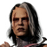
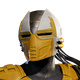
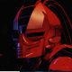
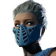
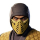
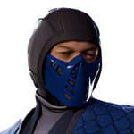
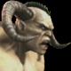
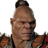
Kombat Pack 1 DLC Cameo Characters:
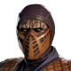
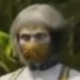
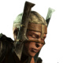
Kombat Pack 2 DLC Cameo Character:
Hidden Character:

MortalKombat.com / NetherRealm Studios
You can e-mail corrections/additions to The Webmaster
Last updated: 03/15/26
Note: All commands are assuming your character is facing right.
If you are facing left, you must reverse the directional commands.
Backwards becoming Forwards and Vice Versa.
It's recommended that your controls match the default setting.
Key:
| U = Up/Jump D = Down/Crouch F = Forward/Toward B = Back/Away |
Dash Forward = F, F Dash Backward = B, B Uppercut = (D+Δ) Sweep = (B+O) Pause/Move List = START |
| Universal: FP = Front Punch BP = Back Punch FK = Front Kick BK = Back Kick *TH = Throw (Away) *(F+TH) = Throw (Toward) KA = Cameo FS = Flip Stance BL = Block/Amplify Special Throw (Away) Reversal = FP/FK Throw (Toward) Reversal = BP/BK |
PlayStation 5: FP = ▢ BP = Δ FK = ✕ BK = O *TH = L1 *(F+TH) = (F+L1) KA = R1 FS = L2 BL = R2 Throw (Away) Reversal = ▢/X Throw (Toward) Reversal = Δ/O |
*Throw (Away) Switches the character's facing side, while (Toward) maintains it.
Enhance: R2
You can Enhance some Special Moves by pressing R2 at the right time.
Most Enhanced Special Moves cost 1 Bar of your Super Meter, which will refill over time.
Breaker: (Hold F+R2)
Use Breakers to stop an opponent's combo.
(Hold F+R2) to perform a Breaker. Some characters can perform special moves after a successful Breaker.
Most Breakers cost 2 Bars of your Super Meter, which will refill over time.
Fatal Blow: (L2+R2)
When your character's Health is below 30%, you can perform your character's most powerful attack, the Fatal Blow!
You can only use your Fatal Blow once per match if it successfully hits.
If a Fatal Blow is Blocked or misses, you will have to wait a short time before you can use it again.
Most Fatal Blows cost 3 Bars of your Super Meter, which will refill over time.
Finisher Distances Explained:
Close: Right next to your opponent.
Mid/Jump: One jump distance away from your opponent.
Far/Fullscreen: Two to three jump distances away from your opponent.
Anywhere: Distance doesn't matter, can be any range (Sweep or further works best).
Ashrah (Repentant Netherrealm Demon)Bio:
As a demon, all Ashrah knew was pain and violence. She assumed all beings, in all realms, lived as she did.
But once she journeyed outside of the Netherrealm, she realized her error. Other realms were places of beauty and peace. She could not aid in their defilement.
Ashrah fled from her sister demons. Along the way, she found an enchanted kriss. It was a demon slayer, which she used to finish her pursuers.
She was stunned to discover that using the kriss to destroy evil was purifying her soul. And that if she continued to do so, she could free herself from the Netherrealm.
Ashrah senses that her final absolution is near. Once achieved, she will finally enter the light.
Special Moves: *You start off in Heaven Mode. D, B, ▢ changes special move properties and switches Heaven/Hell Mode.
Heaven Mode:
Invoking The Light: D, B, ▢
Heaven's Beacon: D, F, ▢ (Enhance: R2)
Astral Projection: B, F, Δ (Delay: Hold Δ) (Cancel: B, B) (Spirit Slice: Hold D) (Enhance:
R2) (Also in Air)
God's Wrath: D, B, Δ (Enhance: R2)
Light Ascension: D, F, ✕ (Enhance: R2)
Dark Shift: (Hold L2 During Enhanced Moves) [Enters Hell Mode]
Hell Mode:
Summoning The Darkness: D, B, ▢
Hell's Pillar: D, F, ▢ (Close: Hold B) (Far: Hold F) (Enhance: R2)
Astral Manifestation: B, F, Δ (Delay: Hold Δ) (Cancel: B, B) (Spirit Slice: Hold D) (Enhance:
R2) (Also in Air)
Demon's Wrath: D, B, Δ (Enhance: R2)
Dark Ascension: D, F, ✕ (Enhance: R2)
Light Shift: (Hold L2 During Enhanced Moves) [Enters Heaven Mode]
Fatal Blow:
Pinned Down: (L2+R2)
Finishers:
Fatality 1 - Heavenly Light: D, F, D, Δ (Mid)
Fatality 2 - Threads of Ill Will: D, D, B, O (Mid)
Animality - NetherRazzle: B, F, D, ✕ (Mid)
Brutality 1 - The Klassic: (D+Δ)
Brutality 2 - Save Me A Slice
L1 / (▢+✕)
Press D, D, D During Hit
Final Hit Must Come From Demon Dance
Brutality 3 - Nail In The Coffin
(F+O), Δ
(Hold D), During Hit
Final Hit Must Come From Crown Cracker
Brutality 4 - Half Day?
▢, Δ, Δ
(Hold U), During Hit
Final Hit Must Come From Cleansed Soul
Brutality 5 - Kutting Korners
B, F, Δ
(Hold D), During Hit
Final Hit Must Come From Spirit Slice
Brutality 6 - Light You Up
(B+✕), ▢
(Hold F), During Hit
Final Hit Must Come From Heaven's Light
Brutality 7 - Just Heavenly
D, F, ▢
(Hold Δ), During Hit
Final Hit Must Come From Heaven's Beacon
Brutality 8 - Air Slice
(U+▢), Δ, Δ
(Hold U), During Hit
Final Hit Must Come From Kritical Kriss
Baraka (Defender of the Tarkatans)Bio:
Baraka was once a respected Outworld merchant. But that life ended in an instant when he contracted the dreaded Tarkat plague.
Incurable, contagious, and the cause of severe physical deformities, Tarkat turned Baraka into a monster. He was cast out and doomed to live out his days in a colony of similarly afflicted Outworlders.
When Baraka first arrived, the colony was in disarray. His fellow Tarkatans had given up and were ready to die.
Their hopelessness lit a fire in Baraka's heart. He spares no effort to better his fellow Tarkatans' lives. He knows that as long as he fights, he will never truly be a victim.
Special Moves:
Bleeding Blade: B, F, ▢ (Enhance: R2)
Blade Sparks: D, B, ▢ (In Air - Can Be Enhanced)
Stab Stab: D, B, ▢ (Enhance: R2) (Chuck: Hold B [when hitting airborne foe])
Baraka Barrage: D, F, Δ (Enhance: R2)
Death Spin: D, F, Δ (In Air - Can Be Enhanced - Can Be Delayed: Hold Δ)
Chop Chop: B, F, ✕ (Enhance: R2) (Extend: R2)
Fatal Blow:
Shishkabob: (L2+R2)
Desperate Tarkatan: (D+L2) [30% Health or Less - Gains Super Meter and Loses Health over time]
Desperate Chop Chop: R2 (During Bleeding Blade)
Desperate Stab Stab Chuck: R2 (During Stab Stab Chuck)
Desperate Baraka Barrage: R2 (During Baraka Barrage)
Desperate Blade Sparks: R2 (During Death Spin) (In Air)
Finishers:
Fatality 1 - Split Decision: B, F, D, ▢ (Close)
Fatality 2 - Four Piece Kombo: F, B, D, O (Close)
Animality - Tranquill Demise: B, D, D, Δ (Mid)
Brutality 1 - The Klassic: (D+Δ)
Brutality 2 - Nom Nom
L1 / (▢+✕)
Press D, D, D During Hit
Final Hit Must Come From Quick Taste
Brutality 3 - Chop Shop
B, F, ✕
Press Any Basic Attack Button Rapidly During Hit
Final Hit Must Come From Chop Chop
Brutality 4 - Empty Inside
D, B, ▢
Press U, U, U During Hit
Final Hit Must Come From Stab Stab
Opponent Must Be Airborne
Brutality 5 - Old School
Δ, ▢, Δ
(Hold B), During Hit
Final Hit Must Come From Euthanizer Basic Attack
Brutality 6 - Tis A Flesh Wound
(F+✕)
(Hold D), During Hit
Final Hit Must Come From Heel Drop
Brutality 7 - Ouchie!
B, F, ▢
(Hold B), During Hit
Final Hit Must Come From Bleeding Blade
Must Be Jump Distance Away
Brutality 8 - Through And Through
(B+✕), Δ
(Hold F), During Hit
Final Hit Must Come From Warrior's Fury
General Shao (Supreme Commander of Outworld's Army)Bio:
Born into a proud military family, Shao was expected to become a soldier. But he was a sickly child who, though brilliant and eager, had an infirm body.
Shao's disability infuriated his father. He dismissed his son's physicians and designed an extreme program to build his son's strength and endurance.
Years of toil molded Shao into a physical colossus and forged within him an iron will. And as his father had promised, Shao became the perfect soldier. His brilliant tactics and relentless effort won Outworld many victories and him much fame.
Though General Shao is sworn to serve the Empress, his loyalty is to Outworld. If Sindel's rule ever endangers Outworld, he will be the first to try to end it.
Special Moves:
Dark Energy: D, F, ▢ (Enhance: R2) [strengthens axe moves for a duration]
Devastator: D, B, ✕ (Enhance: R2)
Death Quake: D, B, O (Enhance: R2)
Power Strike: D, F, O (Enhance: R2)
Axe Recall: D, F, O
No Axe:
Smoldering Wrath: D, B, ▢ (Enhance: R2) [extends duration before weapon returns automatically]
Treechopper: D, F, ▢ (Enhance: R2) [near axe]
Reverse Treechopper: D, F, Δ (Reverse X2: Hold B) (Enhance: R2) [near axe/opponent]
Klassic Kahn: D, B, ✕ (Enhance: R2)
Axe Quake: D, B, O (Enhance: R2)
Fatal Blow:
War God: (L2+R2)
Finishers:
Fatality 1 - Spin Cycle: B, F, D, ▢ (Mid)
Fatality 2 - Axe-ident: D, F, B, ▢ (Mid)
Animality - Bear Necessities: B, D, D, O (Mid)
Brutality 1 - The Klassic: (D+Δ)
Brutality 2 - Feel My Power
L1 / (▢+✕)
Press D, D, D During Hit
Must Be Done When Wielding Axe
Final Hit Must Be From Might Makes Right
Brutality 3 - Is That Your Best?
L1 / (▢+✕)
Press U, U, U During Hit
Must Be Done When Not Wielding Axe
Final Hit Must Come From Might Makes Right
Brutality 4 - All Too Easy
(B+▢), Δ
(Hold ▢), During Hit
Must Be Done When Wielding Axe
Final Hit Must Be From Axe Splitter
Brutality 5 - Don't Make Me Laugh
(F+Δ), (▢+✕)
(Hold D), During Hit
Final Hit Must Be From You're Weak
Brutality 6 - It's Official...You Suck!
D, B, O
(Hold B), During Hit
Final Hit Must Be From Death Quake
Must Be Jump Distance Away
Brutality 7 - Clean Cut
Δ, Δ, Δ
(Hold F), During Hit
Final Hit Must Come From Glory In Kombat
Brutality 8 - Wait For It!
(F+▢), Δ, Δ
(Hold ▢), During Hit
Final Hit Must Come From Direct Orders
Geras (Sentinel of the Hourglass)Bio:
Reconstructed by Liu Kang at the dawn of his New Era, Geras remains eternal and unkillable. He retains the memories of all the innumerable timelines he has watched pass and fade.
In this New Era, Geras monitors events to make sure that they are faithful to Liu Kang's vision. When they deviate from their intended path, it is Geras's responsibility to correct them.
As threats begin to mount, Geras works tirelessly to defend reality. But to succeed, he must first identify the mastermind behind the plot to destroy Liu Kang's New Era.
Special Moves:
Time Stop: B, F, ▢ (Enhance: R2)
Time Drop: (Hold B)
History Lesson: D, F, Δ
Follow-Up Exam: D, B, Δ
Redo: B, F, ✕
Double Time: B, F, ✕ (Enhance: R2)
Countdown: D, B, ✕ (Enhance: R2)
Inevitable: D, B, ✕
Behold The End: (Hold B)
Fixed Point: D, B, (✕+R2) (Also in Air)
Denial: D, B, O (Enhance: R2)
Sandstorm: D, F, O (Close: Hold B) (Far: Hold F) (Enhance: R2)
Fatal Blow:
Colliding Words: (L2+R2)
Finishers:
Fatality 1 - Sand Storm: F, D, D, O (Mid)
Fatality 2 - Temporal Execution: D, F, B, ▢ (Close)
Animality - Hippo-Kritical: B, F, D, F (Mid)
Brutality 1 - The Klassic: (D+Δ)
Brutality 2 - From Another Time
L1 / (▢+✕)
Press D, D, D During Hit
Final Hit Must Come From Outside Help
Brutality 3 - Time Will Tell
D, B, Δ / D, F, Δ
(Hold O), During Hit
Final Hit Must Come From History Lesson or Follow-Up Exam
Must Be Performed In The Corner
Brutality 4 - Sand of Time
▢, Δ, Δ, (▢+✕)
Press F, F, F, During Hit
Final Hit Must Come From Shattered Sands
Brutality 5 - Just Rip It Off
D, F, O
(Hold D), During Hit
Final Hit Must Come From Sandstorm
Brutality 6 - Unstoppable Force
(F+▢), Δ, (▢+✕)
(Hold F), During Hit
Final Hit Must Come From Slab Returnal
Brutality 7 - Right On Through
D, F, Δ
(Hold ▢), During Hit
Final Hit Must Come From Follow-Up Exam Or History Lesson
Not possible when Geras is cornered
Brutality 8 - Time Warp
B, F, ▢
(Hold F), During Hit
Final Hit Must Come From Time Stop
Havik (Rebellious Anarchist)[Unlockable - Complete Chapter 15 of Story Mode]
Bio:
A citizen of the realm of Seido, Havik is sworn to take down its oppressive regime and free his people. There, order is prized above all else. Lawbreaking is met with strict punishment. Its citizens live in strictly regulated castes.
As a member of Seido's lowest caste, Havik had neither rights nor privileges. He seethed with anger at the injustice. When he is brutally punished for a minor crime, Havik finally decides to act. He sets out to destroy Seido's regime and replace it with
an anarchist utopia.
Once he breaks Seido's social order, Havik will free its citizens. Together, they will live in blessed anarchy.
Special Moves:
Neoplasm: B, F, ▢ (Enhance: R2)
Helping Hand: D, B, ▢ (Enhance: R2)
Blood Bath: B, F, Δ (Close: B) (Enhance: R2)
Corpse Taunt: B, F, Δ (Enhance: R2) (>30% Health - Only after opponent was hit with Enhanced Blood Bath)
NetherSnatcher: D, B, Δ (Enhance: R2)
Seeking Neoplasm: B, F, ✕ (Enhance: R2)
Twisted Torso: D, B, O (Enhance: R2)
Nether Stomp: D, B, O (Enhance: R2) (In Air)
Fatal Blow:
Disarmed and Dangerous: (L2+R2)
Finishers:
Fatality 1 - Atomic Heart: D, F, D, O (Close)
Fatality 2 - RAD-ius Incision: F, B, D, Δ (Close)
Animality - No Laughing Matter: B, D, D, ✕ (Mid)
Brutality 1 - The Klassic: (D+Δ)
Brutality 2 - Good To Be Back!
L1 / (▢+✕)
Press F, D, B, U During Hit
Final Hit Must Come From Self-Destructive Barrage
Must Be Near Opponent
Brutality 3 - Need A Hand?
(B+Δ), Δ, (▢+✕)
(Hold F), During Hit
Final Hit Must Come From Skab Stab
Brutality 4 - It's A Twist Off
Δ, Δ
(Hold D), During Hit
Final Hit Must Come From Flesh Wound
Brutality 5 - Knocking Around
D, B, ▢
(Hold U), During Hit
Final Hit Must Come From Helping Hand
Brutality 6 - Kablooey
B, F, ✕
(Hold F), During Hit
Final Hit Must Come From Seeking Neoplasm
Must Be Near Opponent
Brutality 7 - Like A Top
D, B, O
(Hold B), During Hit
Final Hit Must Come From Twisted Torso
Brutality 8 - Like A Top
▢, ▢, Δ
(Hold F), During Hit
Final Hit Must Come From Neck Snapper
Johnny Cage (21st Century Action Hero)Bio:
Like many stars before him, Johnny became addicted to his fame. He came to measure his self-worth by his fans' adoration and their praise of him on social media.
But with his star now fading, Johnny is fighting an uphill battle to remain relevant. He joins Liu Kang's Earthrealm champions hoping that it will provide his career and his fame a desperately needed boost.
Special Moves:
Ball Buster: B, D, ▢ (Enhance: R2)
Show Off: D, B, ▢ (Enhance: R2) (Extend: Hold ▢) [parry]
Rising Star: D, B, ✕ (Enhance: R2) (Hype: L2)
Shadow Dash: D, F, ✕ (Enhance: R2) (Extend: L2)
Shadow Kick: B, F, O (Enhance: R2) (Hype: L2)
Hype: F, D, B, O
Wowing Out: F, D, B, O
Fatal Blow:
That's All Folks: (L2+R2)
Or Is It? (Hold L2+R2)
Shadow Dash: D, F, ✕
Finishers:
Fatality 1 - Hollywood Walk of Pain: F, B, D, Δ (Close)
Fatality 2 - Krash and Burn: F, D, B, O (Mid - Far)
Animality - Open The Beaches: B, F, B, F (Mid)
Brutality 1 - The Classic: (D+Δ)
Brutality 2 - Here's Johnny
L1 / (▢+✕)
Tap D During Hit
Final Hit Must Come From Wombo Kombo
Brutality 3 - Game Over Man
▢ or ✕[ , ] L1 or ▢[ + ] ✕
Must Throw Escape To Activate
Final Hit Must Come From Hands Off
Brutality 4 - You Got Caged
F, D, B, Δ
(Hold Δ), During Hit
Final Hit Must Come From Throwing Shade
Brutality 5 - Welcome To The Party
B, D, ▢
(Hold Δ), During Hit
Final Hit Must Come From Ball Buster
Brutality 6 - Hope You're Insured
B, F, O
(Hold O), During Hit
Final Hit Must Come From Shadow Kick
Brutality 7 - Gut Hole!
(B+Δ)
(Hold F), During Hit
Must Be Fully Charged
Final Hit Must Come From Charge Gutbuster
Brutality 8 - Freeze Frame
(F+▢), Δ, O
(Hold D), During Hit
Final Hit Must Come From Back To The Footure
Kenshi Takahashi (Restorer of His Family's Name)Bio:
Once one of ancient Japan's most honored families, the Takahashis were decimated in battle. They lost everything, including the emblem of their power: the revered sword, Sento. Those who survived joined the Bakuto, a predecessor of the Yakuza, for its
protection.
Five centuries later, Kenshi is raised on the stories of his ancient family's exploits. Detesting his corrupt Yakuza life, he pines to free the Takahashis from the Yakuza's grasp and restore their name.
But for his family to follow him, Kenshi must first fight to prove that he can lead. His first battle is to find and retrieve Sento.
Special Moves:
Ancestral Guard: D, F, ▢ (Extend: Hold ▢) (Cancel: L2)
Soul Charge: B, F, Δ (Enhance: R2)
Demon Drop: D, B, Δ (Close/Far: B/F - Enhance: R2)
Rising Karma: B, F, ✕ (Enhance: R2)
Force Push: B, F, O (Hold O to Charge - Enhance: R2)
Sento Stance: D, B, ▢ (Disable Spirit Action While Held - Hold R1)
During Sento Stance:
Summon Ancestor: D, B, ▢
Spirit Bop: ▢
Double Dose: Δ
Lunging Soul: ✕
Pekara Punish: O
Banish Ancestor: D, B, ▢
Spiritual Alignment: D, B, Δ (Enhance: R2)
Soaring Sento: D, B, ✕ (Enhance: R2)
Soul Exit: B, F, O (Enhance: R2)
Teamwork: D, B, O
Ancestral Assist: D, B, (O+R2)
Fatal Blow:
Two Heavens Assault: (L2+R2)
Finishers:
Fatality 1 - Blended: F, D, D, Δ (Close)
Fatality 2 - Gyro-Nope: B, D, B, ▢ (Mid)
Animality - Wolf It Down: D, D, D, ▢ (Mid)
Brutality 1 - The Classic: (D+Δ)
Brutality 2 - Where You Going?
L1 / (▢+✕)
Press D, D, D During Hit
Final Hit Must Come From Deep Tissue
Brutality 3 - Out Of Sight
L1 / (▢+✕)
Must Be In Sento Stance
(Hold ▢), During Hit
Final Hit Must Come From Deep Tissue
Brutality 4 - Did You See That?
D, B, (O+R2)
Must Be In Sento Stance
Press Any Basic Attack Button Rapidly 6 Times During Hit
Final Hit Must Come From Ancestral Assist
Brutality 5 - See Ya Later
D, B, O
(Hold D), During Hit
Must Be In Sento Stance
Final Hit Must Come From Teamwork
Brutality 6 - Nothing To See Here
B, F, Δ
(Hold B), During Hit
Final Hit Must Come From Soul Charge
Brutality 7 - On A Diet
B, F, O
(Hold D), During Hit
Must Be Fully Charged
Final Hit Must Come From Force Push
Brutality 8 - Where You Go?
B, F, O
(Hold ▢), During Hit
Final Hit Must Come From Force Push
Kitana (Princess of Outworld)Bio:
Kitana has one purpose in life: to aid and protect her older sister, Mileena, as she prepares to rule Outworld one day.
The steady-handed Kitana ignores the calls of those who advocate that she should replace her impulsive sister as heir. Instead, Kitana will defend the realm by fighting to make Mileena the best Empress possible. She will also fight to hide the dark secret
that could end her sister's reign before it begins.
Special Moves:
Fan Toss: B, F, ▢ (Also in Air) (Enhance: R2) (Close/Far: B/F - While Enhanced)
Fan-Nado: D, B, ▢ (Also in Air) (Enhance: R2) (Close/Far: B/F - Also While Enhanced)
Princess Pirouette: D, F, Δ (Enhance: R2)
Square Wave: D, B, Δ (Also in Air) (Enhance: R2)
Fancy Flick: D, B, ✕ (Enhance: R2) (Close/Far: B/F - Also While Enhanced)
Reverse Fan Toss: D, B, ✕ (Enhance: R2) (In Air)
Wind Bomb: B, D, F, O (Close/Far/Very Far: B/F/U)
Wind Bomb Squall: B, D, F, O
Fatal Blow:
Stepping Up: (L2+R2)
Finishers:
Fatality 1 - Royal Blender: D, F, D, O (Far)
Fatality 2 - Last Kiss: D, D, B, O (Close)
Animality - Royal Nectar: D, D, F, D (Mid)
Brutality 1 - The Klassic: (D+Δ)
Brutality 2 - Some Off The Top
L1 / (▢+✕)
Press D, D, D During Hit
Final Hit Must Come From Talk To The Fan
Brutality 3 - Hit The Fan
B, F, ▢
(Hold B), During Hit
Final Hit Must Come From Fan Toss
Must Be Jump Distance Away
Brutality 4 - Where'd You Go?
D, B, Δ
(Hold D), During Hit
Final Hit Must Come From Square Wave
Victim Must Be In Air
Brutality 5 - Easy Peasy
▢, ▢, Δ
(Hold ▢), During Hit
Final Hit Must Come From Rising Up
Brutality 6 - Kiss It
(F+▢), Δ
(Hold D), During Hit
Final Hit Must Come From Twisted Edenian
Brutality 7 - Cyclone Vortex
B, D, FO
(Hold ▢), During Hit
Final Hit Must Come From Wind Bomb
Brutality 8 - Butt Head
(B+✕), O
(Hold F), During Hit
Final Hit Must Come From Booty Bump
Kung Lao (Youthful Warrior with Dreams of Glory)Bio:
Born and raised in the village of Fengjian, Kung Lao has spent his life toiling in the fields. It has been an honorable life, if not a glorious one.
Kung Lao's greatest fear is that his life will amount to nothing. He prays fervently that he will be called to do something bigger.
His prayers are answered when he is asked to join the champions of Earthrealm. As a warrior fighting for its honor, Kung Lao knows that his victories will be long remembered.
Special Moves:
Buzzsaw: B, F, ▢ (Also in Air) (Enhance: R2)
Hat Toss: D, B, ▢ (Enhance: R2) (Direct Down/Up: D/U)
Shaolin Shimmy: B, F, Δ (Enhance: R2)
Shaolin Shinkee: (O+R2) [when enhanced shaolin shimmy is blocked]
Kung-Kussion: D, B, Δ (Enhance: R2) (Close)
Shaolin Spin: D, U, ✕ (Hold ✕ to Extend - Move: B, F) (Cancel: D, D) (Enhance:
R2)
Soaring Monk/Dive Kick: D, B, O (Also in Air) (Enhance: R2)
Fatal Blow:
Practiced And Perfected: (L2+R2)
Finishers:
Fatality 1 - Lao'd and Clear: B, F, B, O (Mid)
Fatality 2 - Slapped Together: B, D, D, ✕ (Close)
Animality - Ti-Gore: F, B, D, Δ (Mid)
Brutality 1 - The Klassic: (D+Δ)
Brutality 2 - Spin Cycle
L1 / (▢+✕)
Tap F, D, B, U During Hit
Final Hit Must Come From Countless Blows
Brutality 3 - Hats Off
D, B, (Δ+R2)
Press Any Basic Attack Button Rapidly
Final Hit Must Come From Enhanced Kung-Kussion
Brutality 4 - Grind Away
B, F, ▢
(Hold ▢), During Hit
Final Hit Must Come From Buzzsaw
Must Be Jump Distance Away
Brutality 5 - Not Holding Back
Δ, ▢, Δ, ▢
(Hold F), During Hit
Final Hit Must Come From Eight Trigram Palm
Brutality 6 - Magic Hat
D, B, O
(Hold U), During Hit
Final Hit Must Come From Soaring Monk
Brutality 7 - Over There
D, B, ▢
(Hold B), During Hit
Final Hit Must Come From Hat Toss
Must Be Jump Distance Away
Brutality 8 - Classic Cut
▢, Δ, ▢
(Hold Δ), During Hit
Final Hit Must Come From Swollen Throat
Li Mei (First Constable of the Sun Do)Bio:
As her parents' firstborn daughter, Li Mei was claimed by the Umgadi, the warrior priestesses who guard Outworld's royal family.
Li Mei's service began with high expectations. Her early success caught the eye of the Royal Family.
But it all fell apart when a terrible tragedy unfolded. Li Mei was blamed for this and in the aftermath, she did the unthinkable: she quit the Umgadi.
Friendless and alone, Li Mei needed a new purpose. She joined Sun Do's constables, the Outworld capital's rough and tumble police force. Over time, she became their First Constable.
Li Mei is glad to be the capital guardian. Still, she hopes one day to redeem herself.
Special Moves:
Nova Blast: B, F, ▢ (Also in Air - Enhance: R2)
Sky Lantern: D, B, Δ
Shi Zi Lion: D, B, ✕ (Enhance: R2)
Chain Reaction: B, F, O (Enhance: R2)
Flipping Heel Kick: D, B, O (In Air - Enhance: R2)
Fatal Blow:
The Lion's Feast: (L2+R2)
Finishers:
Fatality 1 - Roman Candle: F, B, F, ✕ (Close)
Fatality 2 - Grand Finale: B, F, D, O (Close)
Animality - UnBearable: D, B, D, ▢ (Mid)
Brutality 1 - The Klassic: (D+Δ)
Brutality 2 - Fast Enough For Ya
B, F, O
(Hold B), During Hit
Final Hit Must Come From Chain Reaction
Brutality 3 - One Way Ticket
D, B, Δ
(Hold D), During Hit
Final Hit Must Come From Sky Lantern
Victim Must Be In Air
Brutality 4 - Head Over Heels
(F+O), O
(Hold D), During Hit
Final Hit Must Come From Lion Tail Basic Attack
Brutality 5 - Heads Or Tails
(F+O), ✕
(Hold U), During Hit
Final Hit Must Come From Kick Precision Basic Attack
Brutality 6 - Light The Way
B, F, ▢
(Hold Δ), During Hit
Final Hit Must Come From Nova Blast
Must Be Jump Distance Away
Brutality 7 - Pop!
D, B, O
(Hold D), During Hit
Final Hit Must Come From Flipping Heel Kick
Must Be In Air
Brutality 8 - Champion's Fury
O, ✕, ▢, Δ
(Hold ▢), During Hit
Final Hit Must Come From Pankration Champion
Liu Kang (God of Fire)Bio:
Having won control of the Hourglass, Liu Kang restarted history. He neutralized the threats and dangers that had come before, crafting a New Era in which all beings would have the opportunity to find peace.
But that peace is now threatened by an enemy that Liu Kang could never have anticipated. It will take all of his wisdom and experience to save not only Earthrealm, but all of reality.
Special Moves:
Cosmic Flame: B, F, ▢ (Enhance: R2 - Also in Air)
Low Dragon: D, B, ▢ (Enhance: R2)
Dragon's Tail: B, F, ✕ (Enhance: R2)
Dancing Dragon: B, F, O (Enhance: R2)
Dragon's Breath: D, B, O (Close: B - Enhance: R2)
Fatal Blow:
Mark of the Creator: (L2+R2)
Finishers:
Fatality 1 - Double Dragon: D, F, B, O (Close)
Fatality 2 - Spaghettification: B, F, B, ✕ (Close)
Animality - Rising Phoenix: D, B, D, Δ (Mid)
Brutality 1 - The Klassic: (D+Δ)
Brutality 2 - Bleeding Heart
L1 / (▢+✕)
Press F, F, F, On Hit
Final Hit Must Come From Cosmic Death Sentence
Brutality 3 - Dancing Around
B, F, O
Press ✕ / O Rapidly 6 Times During Hit
Final Hit Must Come From Dancing Dragon
Brutality 4 - Pop Goes The...
✕, ✕, ✕
(Hold F), During Hit
Final Hit Must Come From Holding Back
Brutality 5 - Just A Nibble
B, F, ✕ / B, F, (✕+R2)
(Hold D), During Hit
Final Hit Must Come From Dragon's Tail
Must Be Jump Distance Away
Brutality 6 - Let's Go For A Ride
B, F, ✕ / B, F, (✕+R2)
(Hold U), During Hit
Final Hit Must Come From Dragon's Tail
Must Be Jump Distance Away
Brutality 7 - Burn With Me
D, B, O
(Hold Δ), During Hit
Final Hit Must Come From Dragon's Breath
Brutality 8 - Heel Issues
▢, Δ, ▢
(Hold D), During Hit
Final Hit Must Come From Punishing Palm
Mileena (Heir to Outworld's Throne)Bio:
Born mere seconds ahead of her twin sister, Mileena is the rightful heir to Outworld's throne. But even so, there are those who distrust Mileena's impulsiveness. They whisper that Kitana, with her steadier hand, should replace Mileena as heir to the throne.
As Mileena fights for legitimacy, she hides a horrible secret: she is infected with the dreaded and lethal Tarkat disease. Were her affliction found out, Mileena would be forced into battle to save her throne.
Special Moves:
Straight Sai: B, F, ▢ (Enhance: R2)
Teleport Down: D, B, Δ (Enhance: R2 - Also in Air)
Teleport Up: D, F, Δ (Enhance: R2)
Low Sai: B, F, ✕ (Enhance: R2)
Roll: B, D, O (Enhance: R2)
Air Ball: D, B, O (In Air)
Air Homing Ball: D, B, O (Enhance: R2) (Delay: Hold O) (Cancel: D, D) (In Air)
Fatal Blow:
Serving Tarkat: (L2+R2)
Krazed Tarkatan: (D+L2) [30% Health or less]
Finishers:
Fatality 1 - Appetizer: B, F, B, ▢ (Close)
Fatality 2 - Killopractic Adjustment: D, F, B, ✕ (Close)
Animality - Maneater: F, D, D, O (Mid)
Brutality 1 - The Klassic: (D+Δ)
Brutality 2 - Did That Hurt?
L1 / (▢+✕)
Press D, D, D During Hit
Final Hit Must Come From Brainstorm
Brutality 3 - Maybe Next Time
Δ, ▢, (▢+✕)
(Hold D), During Hit
Final Hit Must Be From Ballerenal Failure Basic Attack
Brutality 4 - The Best Part
D, B, (Δ+R2)
Press ▢ / Δ Rapidly 6 Times During Hit
Final Hit Must Be From Enhanced Teleport Down
Brutality 5 - Early Lunch
B, D, (O+R2)
(Hold O), During Hit
Final Hit Must Be From Enhanced Roll
Brutality 6 - High Roller
B, D, O
(Hold U), During Hit
Final Hit Must Be From Roll
Must Be Jump Distance Away
Brutality 7 - Up The Gut
D, F, Δ
(Hold U), During Hit
Final Hit Must Come From Teleport Up
Brutality 8 - Head Case
(F+✕), O, ✕
(Hold B), During Hit
Final Hit Must Come From Can't Fight It
Nitara (Heroine of Vaeternus)Bio:
Nitara's race of vampires hails from the dark and desolate realm of Vaeternus. To survive, they evolved the ability to feed on the blood of other creatures.
The Vaeternians thrived, building a great society. But as their comfort grew, so did their shortsightedness. They overfed on Vaeternus' creatures, disrupting the natural order. They now starve as it collapses.
It is Nitara's solemn obligation to deliver her people from hunger and save her race. Vaeternus must survive.
Special Moves:
Bad Blood: B, F, ▢ (Enhance: R2)
Quick Taste: B, F, Δ (Enhance: R2 - Also in Air)
Leap of Faith: D, B, Δ (Enhance: R2)
Dark Plunge: D, B, O (In Air) (Enhance: R2)
Blood Sacrifice: D, F, O (Enhance: R2)
Bloody Bolt: B, F, ✕ (Close/Far: B, F - Enhance: R2)
Dash: (Any Direction+L2) (In Air)
Fatal Blow:
Terror From Above: (L2+R2) (Also in Air)
Finishers:
Fatality 1 - Vaeternus KomBAT: D, D, B, ▢ (Mid)
Fatality 2 - Brake Check: B, D, B, O (Mid - Far)
Animality - Bats All, Folks: F, D, D, ✕ (Mid)
Brutality 1 - The Klassic: (D+Δ)
Brutality 2 - Embrace The Pain
L1 / (▢+✕)
Press U, U, U During Hit
Final Hit Must Come From Not Worth The View
Brutality 3 - Come Here Often
B, F, Δ
Press Any Basic Attack Button Rapidly During Hit
Final Hit Must Come From Quick Taste
Brutality 4 - Taste Of Blood
B, F, ✕
(Hold ✕), During Hit
Final Hit Must Come From Bloody Bolt
Must Be Jump Distance Away
Brutality 5 - Something You Ate?
B, (F+▢+R2)
(Hold D), During Hit
Final Hit Must Come From Enhanced Bad Blood
Brutality 6 - They Come Right Off
(F+▢), Δ
(Hold U), During Hit
Final Hit Must Come From Easy Prey Basic Attack
Brutality 7 - Split Decision
Δ, Δ, ▢
(Hold U), During Hit
Final Hit Must Come From Flying Kolors
Brutality 8 - Head Trauma
(B+Δ), O
(Hold F), During Hit
Final Hit Must Come From Drawing Blood
Raiden (Champion of Earthrealm)Bio:
In the village of Fengjian, Raiden was known for his kindness and his charity. He was happy to spend his days tending to the fields, as well as to his friends and family.
So when he is asked to leave Fengjian and become one of Earthrealm's champions, Raiden hesitates. But he soon realizes that to best serve his village, he must join them.
As threats to Earthrealm mount, Raiden must mature into the great warrior that Liu Kang knows he can be.
Special Moves:
Electric Orb: D, F, ▢ (Enhance: R2) (Extend: Hold ▢ - Overcharge: R2 - Discharge: D,
F, ▢ (Close)
Razzle Dazzle: D, B, Δ (Enhance: R2) (Close)
Shocker: D, F, Δ (Enhance: R2 - Extend: Hold Δ) (Close)
Electric Fly: B, F, ✕ (Enhance: R2 - Also in Air)
Electromagnetic Storm: D, B, ✕ (Enhance: R2) (Traveling: ✕)
Lightning Port: D, U (Enhance: R2)
Fatal Blow:
Raijin' Raidens: (L2+R2)
Finishers:
Fatality 1 - The Storm's Arrival: B, F, B, Δ (Close)
Fatality 2 - Ride The Lightning: D, F, B, ▢ (Mid)
Animality - Electrifying: D, B, D, O (Mid)
Brutality 1 - The Klassic: (D+Δ)
Brutality 2 - That's A Shocker
L1 / (▢+✕)
Press ▢ / Δ Rapidly 6 Times During Hit
Final Hit Must Come From Exposed Wires
Brutality 3 - Overload
D, B, ✕
(Hold U), During Hit
Final Hit Must Have Enhanced Electromagnetic Storm Or Must Have Electric Charge And Come From Electromagnetic Storm
Brutality 4 - Inside Out
B, F, ✕
(Hold D), During Hit
Final Hit Must Come From Electric Fly
Brutality 5 - Headed Nowhere
▢, Δ, ✕
(Hold U), During Hit
Final Hit Must Come From Micro Burst Basic Attack
Brutality 6 - Excess Energy
D, F, ▢
(Hold B), During Hit
Final Hit Must Come From Electric Orb
Must Be Jump Distance Away
Brutality 7 - Stunning!
D, B, (Δ+R2)
(Hold Δ), During Hit
Final Hit Must Come From Enhanced Razzle Dazzle
Brutality 8 - Up Up Zap
(F+Δ), ▢
(Hold B), During Hit
Final Hit Must Come From Electric Charge
Rain (High Mage of Outworld)Bio:
As a student at Outworld's exclusive Imperial Academy of Sorcery, Rain amazed his peers with his singular aptitude for water magic. Having honed his craft of water magic into a fierce weapon, he now hopes to learn the realms' darkest and most powerful
sorcery.
Special Moves:
Water Beam: B, F, ▢ (Enhance: R2) (Charge: Hold ▢) (Advancing Cancel: F, F) (Retreating Cancel:
B, B)
Upflow: D, B, ▢ (Enhance: R2)
Water Gate: D, B, Δ
Water Gate Activate: D, B, Δ (Also in Air)
Water Gate Teleport: D, F, Δ
Confluence Beam: D, F, Δ (Enhance: R2)
Water Gate Teleport to Oldest Portal: D, F, B, Δ
Air Water Gate Teleport: D, F, Δ (In Air)
Air Confluence Beam: D, F, Δ (Enhance: R2) (In Air)
Air Water Gate Teleport to Oldest Portal: D, F, B, Δ
Geyser: D, B, ✕ (Far: F - Enhance: R2)
Water Shield: F, D, B, O (Enhance: R2)
Ancient Trap: B, F, O (Close/Far: B/F)
Rain God: D, D, U (Close: Hold B) (Far: Hold F) (Delay: Hold U/R2) (Cancel: L2)
Fatal Blow:
Water God's Judgment: (L2+R2)
Finishers:
Fatality 1 - The Red Sea: D, D, B, O (Close)
Fatality 2 - Under Pressure: D, F, B, ✕ (Mid)
Animality - Allergic Reaction: F, B, D, B (Mid)
Brutality 1 - The Klassic: (D+Δ)
Brutality 2 - Just A Little Dip
L1 / (▢+✕)
Press Any Attack Button Rapidly
Final Hit Must Come From 100% Chance Of Pain
Brutality 3 - Aqua Finished
(F+Δ), ▢, ✕
(Hold B), During Hit
Final Hit Must Come From Waterwhirled
Brutality 4 - Bubble Head
▢, ▢, Δ
(Hold D), During Hit
Final Hit Must Come From Attitide Adjustment
Brutality 5 - Down The Drain
B, F, O
Final Hit Must Come From Ancient Trap
Brutality 6 - Rainy Day
D, D, U
(Hold D), During Hit
Final Hit Must Come From Rain God
Must Be Jump Distance Away
Brutality 7 - Around We Go
(F+▢), Δ
(Hold B), During Hit
Final Hit Must Come From Kraken Killer
Brutality 8 - Filtered
(F+✕), Δ
(Hold B), During Hit
Final Hit Must Come From Centrifugal Force
Reiko (General Shao's Loyal Lieutenant)Bio:
Reiko was a boy when he and his family were captured during the Kafallah War. Though his family died, Reiko fought and survived.
After spending months as a prisoner, Reiko was freed during a raid by General Shao. Despite his youth and small size, Reiko attacked his former captors and exacted bloody revenge.
Impressed by the boy's spirit, General Shao made Reiko his squire. Under his tutelage, Reiko learned the ways of War. He became an exceptional soldier and is now the General's second-in-command.
Reiko's loyalty to General Shao is absolute. He will live and die by his orders.
Special Moves:
Retaliation: D, B, ▢ (Enhance: R2) (Parries High, Mid and Overhead Attacks)
Pale Rider: B, D, F, ▢ (Mountain Side: Hold B) (Enhance: R2) (Close)
Reap The Whirlwind: D, F, ▢ (Enhance: R2) (In Air, Close)
Assassin Throwing Stars: B, F, Δ (Enhance: R2)
Charging Pain: B, F, ✕ (Enhance: R2) (Delay: Hold ✕ - Cancel: D, D)
Pain Knee: (Hold U/B) (Enhance: R2)
Pain Reaper: (Hold ▢) (Enhance: R2)
Tactical Takedown: D, B, ✕ (Enhance: R2)
Fatal Blow:
The Soldier's Spearit: (L2+R2) (Close)
Anti-Air Soldier's Spearit: (L2+R2), (Hold U) (Close)
Finishers:
Fatality 1 - The Impaler: D, D, B, Δ (Mid)
Fatality 2 - Pinned Down: B, D, D, O (Close)
Animality - Ram-page: F, D, D, ▢ (Mid)
Brutality 1 - The Klassic: (D+Δ)
Brutality 2 - No Turning Back
L1 / (▢+✕)
Press O, 4 Times Rapidly
Final Hit Must Come From Military Might
Brutality 3 - You Had Enough?
B, D, F, ▢
(Hold D), During Hit
Final Hit Must Come From Pale Rider
Brutality 4 - Does It Sting
D, B, ✕
Press D, D, D During Hit
Final Hit Must Come From Tactical Takedown
Brutality 5 - Not Even Close
D, B, ▢
(Hold ▢), During Hit
Final Hit Must Come From Retaliation
Brutality 6 - There And Back Again
▢, Δ, ✕
(Hold F), During Hit
Final Hit Must Come From Krude Kompany
Brutality 7 - Long Walk
B, F, ✕
(Hold D), During Hit
Final Hit Must Come From Charging Pain
Brutality 8 - Spear Head
✕, O
(Hold D), During Hit
Final Hit Must Come From Kollateral Damage
Reptile (Zaterran Slave)Bio:
Reptile is Zaterran, one of the reptiloid race which lives on Outworld's fringes.
Like other reptiles, Zaterrans can camouflage themselves. But Reptile possesses a unique mutation: one which allows him to shift shape to appear human.
Bullied mercilessly by Zaterrans for this ability, Reptile left home to make his future elsewhere.
Special Moves:
Acid Spit: D, F, ▢ (Acid Spit Ball: Hold ▢) (Enhance: R2)
Dash Attack: B, F, Δ (Enhance: R2)
Force Ball: D, F, ✕ (Slow/Fast: B/F) (Enhance: R2)
Death Roll: B, F, O (Enhance: R2)
Invisibility: D, U, O (Enhance: R2)
Falling Fangs: D, B, O (In Air) (Close: Hold B) (Cancel: Hold D) (Enhance: R2)
Fatal Blow:
The Beast Unleashed: (L2+R2)
Finishers:
Fatality 1 - Indigestion: F, B, D, O (Mid)
Fatality 2 - Acid Reflux: F, D, B, ✕ (Close) [But not beside]
Animality - Feed Me, Syzoth: D, D, B, O (Mid)
Brutality 1 - The Klassic: (D+Δ)
Brutality 2 - Damn Tasty!
L1 / (▢+✕)
Press D, D, D During Hit
Final Hit Must Come From Puny Human
Brutality 3 - Krokodile Done Right
B, F, O
Press U, U, U During Hit
Final Hit Must Come From Death Roll
Brutality 4 - Behind You
B, F, Δ
(Hold Δ), During Hit
Final Hit Must Come From Dash Attack
Brutality 5 - Ready To Pounce
(B+Δ)
Must Be Fully Charged
Final Hit Must Come From Devastating Blow
Brutality 6 - Pop Belly
(F+✕), Δ
(Hold B), During Hit
Final Hit Must Come From Visceral Klaw
Brutality 7 - Sizzle Away
D, F, ▢
(Hold ▢), to trigger Acid Spit Ball
(Hold B), During Hit
Final Hit Must Come From Acid Spit Ball
Must Be Jump Distance Away
Brutality 8 - A Little Snack
▢, ▢, O
(Hold D), During Hit
Final Hit Must Come From Killer Kick
Scorpion (Revered Lin Kuei Warrior)Bio:
Like his cherished father, Scorpion is dedicated to the Lin Kuei and its defense of Earthrealm. When his father died, Scorpion was bereft. Though he took pride in knowing that his brother, Sub-Zero, would succeed their father as the Lin Kuei's Grandmaster.
But Sub-Zero's unprecedented moves to cast off the Lin Kuei's traditional duties have frozen Scorpion's enthusiasm. He fears that he may one day have to battle his brother for control of the Lin Kuei's legacy.
Special Moves:
Spear: B, F, ▢ (Enhance: R2)
Blazing Charge: B, F, Δ (Enhance: R2)
Kyo Snag: B, F, Δ (Enhance: R2) (In Air, Far)
Kyo Snag - Close: D, B, Δ (Enhance: R2) (In Air)
Twisted Kyo: D, B, Δ (Enhance: R2)
Flame-Port: D, B, ✕ (Enhance: R2 - Also In Air)
Devouring Flame: B, F, O (Enhance: R2)
Fatal Blow:
Speared And Seared: (L2+R2)
Finishers:
Fatality 1 - Eye-Palling Victory: D, F, B, R2 (Mid)
Fatality 2 - Killer Klones From Netherrealm: B, F, B, Δ (Anywhere)
Animality - Does It Sting?: F, D, D, O (Mid)
Brutality 1 - The Klassic: (D+Δ)
Brutality 2 - Choke On It
L1 / (▢+✕)
Tap F, D, B, U During Throw
Final Hit Must Come From Fire Drop
Brutality 3 - Any Way You Slice It
B, F, Δ
Press D, D, D During Hit
Final Hit Must Come From Blazing Charge
Brutality 4 - Stop Ahead
B, F, ▢
(Hold B), During Hit
Final Hit Must Come From Spear
Must Be Jump Distance Away
Brutality 5 - Burn For Me!
B, F, O
(Hold U), During Hit
Final Hit Must Come From Devouring Flame
Brutality 6 - Hot Head
D, B, ✕
(Hold ▢), During Hit
Final Hit Must Come From Flame-Port
Brutality 7 - Round And Round
D, B, Δ
(Hold ▢), During Hit
Final Hit Must Come From Twisted Kyo
Brutality 8 - Light This Candle
(U+Δ), (▢+✕)
Press D, D, D,
Final Hit Must Come From Demonic Slam
Sindel (Empress of Outworld)Bio:
When Sindel ascended to Outworld's throne, she worried that she was ill-prepared. Adding to her stress: her impending arranged marriage to Jerrod, an Outworld noble. Forced into it to placate a rebellious region, Sindel could only pray that he was worthy.
To Sindel's delight, Jerrod proved an ideal partner. Her early reign marked the start of a new Golden Age. Sindel then welcomed her beautiful twin daughters, Mileena and Kitana. She thanked the gods for her charmed life.
But Sindel had counted her blessings too quickly. When Jerrod was murdered, Sindel's heart was broken. Smelling weakness, factions formed to challenge her rule.
As her enemies conspire, Sindel fights to protect her family and her empire. She will do whatever it takes to defend her daughters' birthright.
Special Moves:
Low Hairball: D, B, ▢ (Enhance: R2)
Hairball: D, F, ▢ (Enhance: R2 - Also in Air)
Scream: B, F, Δ
Levitate: D, B, Δ (In Air) (Enhance: R2) (Cancel: D)
Move: B/F (While Levitating)
Inspire: D, B, ✕ (Enhance: R2)
Queen's Kommand: D, B, O (Enhance: R2)
Kartwheel: D, F, O (Enhance: R2)
Fatal Blow:
Snatched: (L2+R2)
Finishers:
Fatality 1 - Hair Comes Trouble: D, B, D, ▢ (Mid)
Fatality 2 - Livin' The Scream: B, F, B, Δ (Mid - Far)
Animality - Terror-antula: B, D, D, O (Mid)
Brutality 1 - The Klassic: (D+Δ)
Brutality 2 - Scream Queen
L1 / (▢+✕)
Press D, D, D During Hit
Final Hit Must Come From Mane Squeeze
Brutality 3 - Split Ends
(F+▢), ✕
(Hold B), During Hit
Final Hit Must Be From Follicular Homicide
Brutality 4 - That Was Fun!
D, F, O
(Hold U), During Hit
Final Hit Must Be From Kartwheel
Brutality 5 - Off With Your Head
Δ, O, O
(Hold F), During Hit
Final Hit Must Be From Royal Dismissal Basic Attack
Brutality 6 - Lose Something?
D, B, ▢
(Hold D), During Hit
Final Hit Must Be From Low Hairball
Must Be Jump Distance Away
Brutality 7 - You Hear Something?
B, F, Δ
(Hold ▢), During Hit
Final Hit Must Come From Scream
Brutality 8 - Down Town
(B+✕)
(Hold F), During Hit
Final Hit Must Come From Ascending The Throne
Smoke (Master of Stealth)Bio:
As a boy, Smoke lived to hunt with his family. Their final hunt, however, ended in tragedy. Having accidentally trespassed onto Lin Kuei lands, they were attacked. Smoke was orphaned.
Ashamed by his warriors' actions, the Lin Kuei Grandmaster adopted Smoke. He raised him alongside his sons, Sub-Zero and Scorpion.
Eventually, Smoke chose to make the Lin Kuei's mission his own. But as he lacked his brothers' innate supernatural abilities, he set out to master practical magic. Having done so, he now joins them in Earthrealm's defense.
Special Moves:
Shadow Blade: D, B, ▢ (Enhance: R2)
Smoke Bomb: D, B, Δ (Enhance: R2)
Vicious Vapors: B, F, ✕ (Enhance: R2 - Also in Air) (Cancel: B+R2)
Smoke-Port: D, B, O (Enhance: R2 - Also in Air) (Cancel: Hold F)
Fatal Blow:
Mistborn Killer: (L2+R2)
Finishers:
Fatality 1 - Hazed and Infused: B, F, D, ▢ (Anywhere)
Fatality 2 - Up in Smoke: D, F, B, Δ (Anywhere)
Animality - Killer Kong: D, F, D, R2 (Mid)
Brutality 1 - The Klassic: (D+Δ)
Brutality 2 - An Eye For An Eye
L1 / (▢+✕)
(Hold D), During Hit
Final Hit Must Come From Assassin's Judgment
Brutality 3 - If It Bleeds
B, F, ✕
(Hold R2), During Hit
Final Hit Must Come From Vicious Vapors
Brutality 4 - Don't Blink
D, B, Δ
(Hold U), During Hit
Final Hit Must Come From Smoke Bomb
Brutality 5 - Slice And Dice
(F+▢), Δ, (▢+✕)
(Hold U), During Hit
Final Hit Must Come From Kutting-Room Four
Brutality 6 - Break A Leg
(F+▢), Δ, Δ, O
(Hold O), During Hit
Final Hit Must Come From Missing The Toes
Brutality 7 - Slice From Above
Δ, ▢, Δ
(Hold D), During Hit
Final Hit Must Come From Everywhere
Brutality 8 - Stuck Up
(F+✕), Δ
(Hold B), During Hit
Final Hit Must Come From Tricky Karambit
Sub-Zero (Grandmaster of the Lin Kuei)Bio:
As the Lin Kuei's Grandmaster, Sub-Zero leads his ancient warrior clan in the defense of Earthrealm from external threats. For centuries, it have been their solemn task.
But Earthrealm hasn't been threatened in generations, and Sub-Zero sees no point in limiting his clan to preparing for dangers that may never come. Under his leadership, the Lin Kuei will come out of the shadows and fight for its place as one of Earthrealm's
great nations.
Special Moves:
Ice Ball: D, F, ▢ (Enhance: R2)
Ice Clone: D, B, ▢ (Also in Air) (Enhance: Tap R2) (Fully Enhance: Hold R2)
Ice Clone Charge: B, F, Δ (Enhance: R2)
Polar Palm: D, B, Δ (Enhance: R2)
Permafrost Palm: D, B, (Hold Δ) (Enhance: R2)
Ice Slide: B, F, ✕ (Enhance: R2)
Ice Slide Spear: (Hold ✕) [During Slide]
Diving Glacier D, B, O (In Air) (Enhance: R2)
Deadly Vapors: D, F, O (Enhance: R2)
Fatal Blow:
Chill Out: (L2+R2)
Finishers:
Fatality 1 - Hairline Fracture: F, D, D, Δ (Anywhere)
Fatality 2 - Brain Freeze: F, B, D, O (Close)
Animality - Mammoth Mash: D, F, D, F (Mid)
Brutality 1 - The Klassic: (D+Δ)
Brutality 2 - Absolute Zero
B, F, (Hold ✕)
Press D, D, D During Hit
Final Hit Must Be From Ice Slide Spear
Brutality 3 - Snowball
D, F, ▢
Final Hit Must Come From Ice Ball
Must Be Full Screen Away
Brutality 4 - Karbon Kopy
B, F, Δ
(Hold ▢), During Hit
Final Hit Must Come From Ice Klone Charge
Brutality 5 - Krushed Ice
Δ, ▢, Δ
(Hold D), During Hit
Must Kill With Full Kombo
Brutality 6 - Ability To Freeze
D, F, O
(Hold O), During Hit
Must Kill With Deadly Vapors
Brutality 7 - So Fragile!
L1 / (▢+✕)
Press D, D, D During Hit
Final Hit Must Come From Negative Zero
Brutality 8 - Ice Kold
(F+▢), Δ, ✕
(Hold D), During Hit
Final Hit Must Come From Freezing Point
Tanya (Guardian of Outworld's royal family)Bio:
Chosen as an infant from Outworld's first-born daughters, Tanya was raised by the Umgadi's priestesses. She's never known her birth family.
As she grew older and saw other initiates wash out, Tanya feared that she would share their fate. But that fear spurred success; after many attempts, Tanya passed her trials and became a full Umgadi.
Over time, Tanya became one of the order's most trusted members, She was the obvious choice when it needed to choose a new leader for the royal family's personal guard.
As an Umgadi, Tanya is sworn to piety and chastity, That is why her bond with Princess Mileena, were it known, would cause a scandal. By following her heart, Tanya risks not only her position but also her life.
Special Moves:
Heavenly Hand: D, F, ▢ (Enhance: R2) (Also in Air - Can Be Enhanced)
Seeking Guidance: D, F, ✕ (Delay: Hold ✕) (Enhance: R2)
Umgadi Dodge: D, F, ✕ (Enhance: R2)
Divine Protection: D, B, ✕ (Delay: Hold ✕) (Enhance: R2) [Parry]
Deity Push: D, B, ✕ (Hold ✕+B) (Enhance: R2)
Umgadi Evade: D, B, ✕ (Hold ✕+F) (Enhance: R2)
Drill Kick: B, F, O (Enhance: R2)
Deity Push: D, B, O (Hold O+B) (Enhance: R2)
Umgadi Evade: D, B, O (Hold O+F) (Enhance: R2)
Spinning Splits Kick: D, B, O (Enhance: R2) (Also in Air - Can Be Enhanced)
Fatal Blow:
100 Hands: (L2+R2)
Finishers:
Fatality 1 - Helping Hands: D, B, D, ✕ (Close)
Fatality 2 - Show of Hands: B, F, D, Δ (Mid)
Animality - Kills-R-Us: D, B, D, B (Mid)
Brutality 1 - The Klassic: (D+Δ)
Brutality 2 - Rest In Pieces
L1 / (▢+✕)
(Hold U), During Hit
Final Hit Must Come From Descendant Blows
Brutality 3 - Hot Head
✕, (▢+✕)
Press D, D, D During Hit
Final Hit Must Come From Brought Low
Brutality 4 - Head Kase
D, F, ▢
(Hold F), During Hit
Final Hit Must Come From Heavenly Hand
Must Be Jump Distance Away
Brutality 5 - Kore Sample
B, F, O
(Hold D), During Hit
Final Hit Must Come From Drill Kick
Must Be Jump Distance Away
Brutality 6 - Watch This!
(F+Δ), ▢, ▢
(Hold F), During Hit
Final Hit Must Come From Karma
Brutality 7 - Need A Hand?
(B+Δ), ✕
(Hold D), During Hit
Final Hit Must Come From Message From Above
Brutality 8 - Royal Guard
▢, Δ, Δ
(Hold B), During Hit
Final Hit Must Come From Piety
Shang Tsung (Scheming Sorcerer) [KP1 DLC]Bio:
Shang Tsung grew up in Outworld's backwaters. Too lazy for hard labor and too shifty for honest work, he eked out a living selling quack cures and fake magic. Though his wares were useless, Shang Tsung's easy charm always closed the deal.
Shang Tsung was resigned to this hardscrabble life. But then one day a mysterious stranger came, promising to make Shang Tsung a powerful sorcerer. Though suspicious of the offer, it was one he couldn't refuse.
Special Moves:
Quick Age Morph: (D+L2) (Also in Air)
Form Stealer: F, D, B, O (Enhance: R2)
Perfect Form: F, B, O
Kameo Kopy: D, F, O (Enhance: R2)
Special Moves - Young Form:
Straight Skull: D, F, ▢ (Enhance: R2 - Also in Air)
Double Skull: D, B, ▢ (Enhance: R2)
Triple Skull: D, B, F, ▢ (Enhance: R2)
Spinning Spikes: D, F, Δ (Enhance: R2)
Bed of Spikes: D, B, ✕ (Enhance: R2)
Old Morph: (D+L2) (Also in Air)
Special Moves - Old Form:
Down Skull: D, F, ▢ (In Air - Close/Far: B/F) (Enhance: R2)
Ground Skull: D, F, ▢ (Enhance: R2)
Ground Skull - Close: D, B, ▢
Ground Skull - Far: D, B, F, ▢
Far to Close Triple Ground Skull: D, F, (▢+R2)
Close to Far Triple Ground Skull: D, B, (▢+R2)
Vicinity Slash: D, F, Δ (Enhance: R2)
Injection: D, B, ✕ (Enhance: R2)
Young Morph: (D+L2) (Also in Air)
Fatal Blow:
Bad Medicine: (L2+R2)
Finishers:
Fatality 1 - Side Effects: B, D, D, O (Close)
Fatality 2 - Feeding Time: F, D, B, Δ (Mid)
Animality - With a Twissst: F, B, D, ✕ (Mid)
Brutality 1 - The Klassic: (D+Δ)
Brutality 2 - Bed Of Spikes
L1 / (▢+✕)
(Hold U), During Hit
Final Hit Must Come From Not Covered By Insurance
Brutality 3 - Stick Around
D, B, ✕
Must Be In Young Form
Final Hit Must Come From Bed Of Spikes
Victim Must Be In Air
Brutality 4 - Chomp! Chomp!
D, F, ▢
Must Be In Young Form
(Hold B), During Hit
Final Hit Must Come From Straight Skull
Must Be Jump Distance Away
Brutality 5 - Fire It Up
D, F, ▢
Must Be In Old Form
(Hold ▢), During Hit
Final Hit Must Come From (Air) Down Skull
Must Be Jump Distance Away
Brutality 6 - It Has Ended
D, B, ✕
Must Be In Old Form
Press D, D, D During Hit
Final Hit Must Come From Injection
Brutality 7 - Soul Steal
(F+O), ▢, Δ
Must Be In Old Form
(Hold ▢), During Hit
Final Hit Must Come From Nerve Endings
Brutality 8 - Run Down
(B+Δ), Δ, ✕
(Hold F), During Hit
Final Hit Must Come From Laid Low
DLC Availability:
September 14th, 2023 if Kombat Pack has been downloaded
September 21st, 2023 if Kombat Pack has not been downloaded
Omni-Man (Viltrumite Warrior) [KP1 DLC]Bio:
Viltrumite warrior Nolan Grayson, better known as the superhero Omni-Man, long fought to protect his adopted home as one of Earth's most powerful champions. He even raised his son, the hero known as Invincible, to follow in his footsteps and carry on his
legacy.
But Omni-Man's true mission was never benevolence - it was conquest. And the Viltrum Empire, hungry for expansion, has no intention of stopping at Earthrealm.
Special Moves:
Mega Clap: B, F, ▢ (Enhance: R2) (Also in Air - Can Be Enhanced)
Giblet Maker: B, F, Δ (Enhance: R2) (Also in Air - Can Be Enhanced)
Viltrumite Stance: D, B, ✕ (Enhance: R2) (Cancel: D+R2)
(Teleport Toward: F+R2) (Thragged Through Mud: ▢) (Honorable Death: Δ) (Tiebreaker: ✕) (Up and Away:
O) (Also in Air - Can Be Enhanced)
Invincible Rush: B, F, O (Also in Air)
Fly Toward: (F+L2) (In Air)
Fly Away: (B+L2) (In Air)
Fatal Blow:
The Thinker: (L2+R2) (Also in Air)
Finishers:
Fatality 1 - Trained Killer: D, D, B, O (Close)
Fatality 2 - Like Putty: D, F, B, ✕ (Mid)
Animality - Hail Mary: F, B, F, D (Mid)
Brutality 1 - The Klassic: (D+Δ)
Brutality 2 - Behind You!
L1 / (▢+✕)
(Hold D), During Hit
Final Hit Must Come From Armageddon
Brutality 3 - Coming Through
B, F, Δ
(Hold ▢), During Hit
Final Hit Must Come From Giblet Maker
Brutality 4 - You Got Boned
(F+O), ▢, (▢+✕)
Press D, D, D During Hit
Final Hit Must Come From Spilled Kontents
Brutality 5 - You Hear That?
B, F, ▢
(Hold B), During Hit
Final Hit Must Come From Mega Clap
Brutality 6 - Split End
(U+▢), Δ, (▢+✕)
(Hold D), During Hit
Final Hit Must Come From Bootstain
Brutality 7 - Destroyed
(B+▢), ▢
(Hold B), During Hit
Final Hit Must Come From Kontemptuous Backhand
Brutality 8 - Around The World
▢, Δ, Δ
(Hold F), During Hit
Final Hit Must Come From Planet Pillager
DLC Availability:
November 09th, 2023 if Kombat Pack has been downloaded
November 16th, 2023 if Kombat Pack has not been downloaded
Quan Chi (Netherrealm Necromancer) [KP1 DLC]Bio:
Quan Chi was born into hard labor in an Outworld mine. He had no future, just the guarantee of certain death in its dark tunnels.
To curry favor with the mine's owner, Quan Chi informed on fellow workers who were planning a strike. It was broken and many strikers killed. The survivors were not going to forgive and forget. They plotted to kill Quan Chi.
Quan Chi's life was saved by a mysterious benefactor. In exchange for his service, she offered to free him from the mines and train him in dark magic. Quan Chi eagerly accepted.
Now a master of the Netherrealm's most vile sorcery, Quan Chi plots with Shang Tsung to conquer the realms. He will not be denied.
Special Moves:
Head Rush: B, F, ▢ (Enhance: R2 - Slow/Fast: B/F) (Also in Air)
Psycho Skull: D, B, ▢ (Enhance: R2) (Close/Far/Very Far: B/F/U)
Psycho Skull Volley: D, B, ▢ (Enhance: R2) (Requires nearby Zone of Power)
Field of Bones: B, D, F, Δ (Close/Far/Very Far: B/F/U) (Enhance: R2)
Zone of Power: D, B, ✕ (Delay: Hold ✕ - Move: B/F)
Zone of Fear: D, B, (✕+R2) (Delay: Hold ✕ - Move: B/F)
Zone of Waste: D, F, ✕ (Delay: Hold ✕ - Move: B/F) (Enhance: R2)
Falling Death: B, F, O (Enhance: R2) (Also in Air)
From the Fog: D, B, O (Enhance: R2)
Fatal Blow:
Journey Through Hell: (L2+R2)
Finishers:
Fatality 1 - Pentamagic Trick: F, B, F, B, Δ (Mid)
Fatality 2 - Final Offering: D, F, B, O (Mid)
Animality - T-Rekt: B, D, D, O (Mid)
Brutality 1 - The Klassic: (D+Δ)
Brutality 2 - Portal Of Blood
L1 / (▢+✕)
(Hold D), During Hit
Final Hit Must Come From Into The Nightmare Realm
Brutality 3 - Splat!
D, B, O
Press D, D, D During Hit
Final Hit Must Come From From The Fog
Brutality 4 - Skull Yum
B, F, ▢
(Hold Δ), During Hit
Final Hit Must Come From Head Rush
Jump Distance
Brutality 5 - Happy Feet
B, F, O
Press D, D, D During Hit
Final Hit Must Come From Falling Death
Brutality 6 - The Nibbler
B, (F+▢+R2)
(Hold O), During Hit
Final Hit Must Come From Enhanced Head Rush
Jump Distance
Brutality 7 - Does That Hurt?
Δ, ▢
(Hold Δ), During Hit
Final Hit Must Come From Soul Extinguisher
Brutality 8 - The Zipper
(B+✕), O, Δ
(Hold ▢), During Hit
Final Hit Must Come From Koccyx Krusher
DLC Availability:
December 14th, 2023 if Kombat Pack has been downloaded
December 21th, 2023 if Kombat Pack has not been downloaded
Peacemaker (Extreme Patriot) [KP1 DLC]Bio:
Christopher Smith, the Peacemaker, cherishes peace with all his heart. So much so, that he will kill anyone and everyone necessary to get it. That is why he molded himself into an unstoppable soldier. Peacemaker believes himself as the greatest expert
in weapons and warfare.
But Peacemaker's heroism masks a troubled soul. Raised by an abusive father, Peacemaker is an extreme loner. Only recently, as a member of the secret team assembled by A.R.G.U.S. for "Project Butterfly", has he learned to trust and rely on others. They
became the family he never had.
Now thrust into the Mortal Kombat universe, Peacemaker has vowed to bring peace to the realms. He won't stop until he finishes the mission.
Special Moves:
Silent and Deadly: D, B, ▢ (Delay: Hold ▢ - Move Left/Right: B/F) (Cancel: R2)
Force Multiplier: B, F, ▢ (Enhance: R2)
Activate Human Torpedo!: B, F, Δ (Enhance: R2)
Activate Anti-Gravity: D, B, Δ (In Front/Behind: B/F) (Soft Landing: Hold U) (Enhanced Escape: R2)
Activate Force Field: F, D, B, ✕ (Enhance: R2)
Activate Sonic Boom: B, F, ✕ (Enhance: R2)
Ground-Air Offensive: D, F, O
Beautiful Bird Bullet: D, B, O
The Ultimately Ally: (D+L2)
Fatal Blow:
Eat Peace!: (L2+R2)
Finishers:
Fatality 1 - Pest Exterminator: D, F, D, O (Mid)
Fatality 2 - Flight Delayed to Rest: B, F, B, Δ (Mid)
Animality - Proud To Be Eagly-merican: B, F, B, D (Mid)
Brutality 1 - The Klassic: (D+Δ)
Brutality 2 - Shield Of Peace!
L1 / (▢+✕)
Press D, D, D During Hit
Final Hit Must Come From Red And Blue Angel
Brutality 3 - Boom Boom!
B, F, ✕
(Hold ▢), During Hit
Final Hit Must Come From Activate Sonic Boom
Brutality 4 - What That do?
Δ, Δ, (▢+✕)
(Hold D), During Hit
Final Hit Must Come From Head On Approach
Brutality 5 - Human Torpedo
B, F, Δ
(Hold O), During Hit
Final Hit Must Come From Activate Human Torpedo
Brutality 6 - Wait For It!
B, F, ▢
(Hold ✕), During Hit
Final Hit Must Come From Force Multiplier
Jump Distance
Brutality 7 - Drop Em!
(F+▢), ▢, O
(Hold B), During Hit
Final Hit Must Come From Total Kommitment Kick
Brutality 8 - Death From Above
D, B, Δ
(Hold D), During Hit
Final Hit Must Come From Activate Anti-Gravity
DLC Availability:
February 28th, 2024 if Kombat Pack has been downloaded
March 06th, 2024 if Kombat Pack has not been downloaded
Ermac (Collection of Souls) [KP1 DLC]Bio:
Ermac is a collection of souls, bound together by Quan Chi's dark magic.
The souls within him were intended to function as a group mind. That part of the spell is temporarily undone, however, when Ermac is defeated by Mileena. During that period, one of the souls in Ermac's collection takes control of his group mind. It is
that of Emperor Jerrod, deceased ruler of Outworld and husband of Empress Sindel. He rejoins the royal family, aiding Empress Mileena's reign.
But when Ermac's collection of souls reestablishes its control, Ermac retreats to Outworld's shadows. No longer Quan Chi's slave, nor bound to the royal family, he must find a future worth fighting for.
Special Moves:
Spirit Punch: B, F, ▢ (Enhance: R2) (Delay: Hold ▢) (Toward: F, F - During Delay) (Away:
B, B - During Delay)
Witch Slam: D, B, ▢ (Enhance: R2)
Behind You: B, F, Δ
Too Late: B, F, (Δ+R2)
Suspended Animation: D, B, Δ (Away/Toward: B/F) (In Air) (Enhance: R2) (Cancel: D+R2)
Shrieking Souls: B, F, ✕ (Enhance: R2)
Death's Embrace: F, D, B, ✕ (Cancel/Death's Release: (D+L2))
Hungry Hands: D, B, ✕ (Enhance: R2) (In Air)
Shifting Spirits: D, B, O (Also in Air) (Enhance: R2) (Float: U) (Down: D)
Fatal Blow:
The Many: (L2+R2)
Finishers:
Fatality 1 - Vitruvian Maim: D, F, D, O (Mid)
Fatality 2 - Swallowed Soul: B, F, B, Δ (Mid)
Animality - We Are Locusts: D, B, D, B (Mid)
Brutality 1 - The Klassic: (D+Δ)
Brutality 2 - Twisted Up
L1 / (▢+✕)
Press D, D, D During Hit
Final Hit Must Come From Wrung Out
Brutality 3 - Separate Ways
Δ, ▢, (▢+✕)
(Hold D), During Hit
Final Hit Must Come From Priest Kaller
Brutality 4 - Good Old Times
B, F, Δ
(Hold Δ), During Hit
Final Hit Must Come From Behind You
Brutality 5 - Soul Escape
B, F, ✕
(Hold D), During Hit
Final Hit Must Come From Shrieking Souls
Brutality 6 - We Win
B, F, ▢
(Hold D), During Hit
Final Hit Must Come From Spirit Punch
Brutality 7 - Dropped Off
D, B, (▢+R2)
(Hold B), During Hit
Final Hit Must Come From Enhanced Witch Slam
Brutality 8 - Transparent
(U+▢), Δ, Δ
(Hold D), During Hit
Final Hit Must Come From Returned To The Earth
DLC Availability:
April 16th, 2024 if Kombat Pack has been downloaded
April 23rd, 2024 if Kombat Pack has not been downloaded
Homelander (The World's Greatest Superhero) [KP1 DLC]Bio:
Homelander is the most powerful being on the planet and the leader of The Seven, the elite superhero team owned and managed by Vought International. In a world where "Supes" are made, he's the strongest of them all. He can fly, has super strength, and
can laser enemies with his eyes. Homelander presents himself as the ultimate patriot and protector, but don't let his movie star good looks or high approval rating fool you. He is a murderous, narcissistic sociopath with an insatiable need for validation,
love, and power.
Homelander's destruction of enemies and lust for power does not end with his world. Challengers from other realms will face his wrath.
Special Moves:
Laser Eyes: B, F, ▢ (Enhance: R2)
Dirty Trick: D, B, ▢ (Enhance: R2) [Parry]
Diabolical Dash: B, F, Δ (Soaring Strike: ▢) (The Seven Slam: Δ) (Krippling Knee: ✕) (Korporate Kick:
Δ)
Air Diabolical Dash: B, F, Δ (Grounding Fist: ▢) (Vought Drop: Δ) (Gliding Knee: ✕) (Hovering Impact:
Δ) (In Air)
Blast Off: D, B, Δ (Enhance: R2)
Low Laser Eyes: B, F, ✕ (Enhance: R2)
Sky Laser Eyes: D, B, ✕ (Enhance: R2)
Sweeping Laser Eyes: B, D, F, O
God Complex: D, B, O (Delay: Hold O) (Cancel: D+L2) (Cancel to Flight: L2 or U+L2)
(In Air)
Flight: (U+L2) (Cancel: D+L2) (Laser Eyes: B, F, ▢) (Ground Laser Eyes: D,
B, ✕)
Fatal Blow:
I Can Do Whatever I Want: (L2+R2) (Also in Air)
Press basic attack buttons during hits to influence damage.
Finishers:
Fatality 1 - Winging It: D, F, D, ✕ (Mid)
Fatality 2 - This is Your Fault: B, F, B, Δ (Mid)
Animality - Let Freedom Wing: B, F, D, O (Mid)
Brutality 1 - The Klassic: (D+Δ)
Brutality 2 - What Happens If?
(B+✕)
(Hold ▢), During Hit
Final Hit Must Come From Hear No Evil
Brutality 3 - Shhhh
D, B, (▢+R2)
(Hold F), During Hit
Final Hit Must Come From Enhanced Dirty Trick
Brutality 4 - Squeeze The Truth
(B+Δ), Δ, (▢+✕)
(Hold D), During Hit
Final Hit Must Come From See No Evil
Brutality 5 - I'll Laser Everyone!
(B+▢), O, Δ
(Hold F), During Hit
Final Hit Must Come From Heroic De-Escalation
Brutality 6 - Eye Exam
B, F, Δ, Δ
(Hold ✕), During Hit
Final Hit Must Come From Vought Drop
Brutality 7 - Almost Got Away
L1 / (▢+✕)
Press D, D, D During Hit
Final Hit Must Come From Up Up And...
Brutality 8 - Top Heavy
(F+▢), Δ
(Hold F), During Hit
Final Hit Must Come From Backhanded Praise
DLC Availability:
June 04th, 2024 if Kombat Pack has been downloaded
June 11th, 2024 if Kombat Pack has not been downloaded
Takeda Takahashi (Enemy of the Underworld) [KP1 DLC]Bio:
Similar to his cousin Kenshi, Takeda Takahashi was raised a Yakuza. Unlike him, Takeda enjoyed this lifestyle. That's why he was chosen to end Kenshi's crusade against his masters.
The fight mortally wounded Takeda. Unwilling to let his cousin die, Kenshi rushed him to the nearest help: the Shirai Ryu.
Even after Takeda was healed, Kenshi wouldn't release him. He feared that the Yakuza might kill him for failing his mission. Takeda resisted, attempting to escape repeatedly.
But as the months passed, he began to appreciate the Shirai Ryu's selfless commitment to Earthrealm, and the contrast to his past lifestyle.
Inspired by the Shirai Ryu, Takeda swore to rip up Earthrealm's underworld by the roots. But he soon learns they are stronger and more tangled than he ever thought possible.
Special Moves:
Shooting Star: D, F, ▢ (Enhance: R2)
Shooting Star - Close: D, F, ▢, B
Shooting Star - Far: D, F, ▢, F
Shooting Star - Very Far: D, F, ▢, U
Enhanced Reverse Shooting Stars: D, B, (▢+R2)
Smart Shuriken: D, B, ▢ (Also in Air)
Falling Star: D, F, ▢ (Enhance: R2) (In Air)
Falling Star - Close: D, F, ▢, B (In Air)
Falling Star - Far: D, F, ▢, F (In Air)
Falling Star - Very Far: D, F, ▢, U (In Air)
Enhanced Reverse Falling Stars: D, B, (▢+R2) (In Air)
Double Spear Ryu: B, F, Δ (Enhance: R2)
Enhanced Double Spear Ryu - Forward: B, F, (Δ+R2), F
Air Spear Ryu: D, B, Δ (Enhance: R2) (In Air)
Swift Stride: B, F, ✕ (Enhance: R2) (Cancel: D) (Phase: U/B)
Rushing Nimbus Technique: B, F, ✕ (In Air) (Enhance: R2)
Rushing Nimbus Attack: D, B, ✕ (In Air) (Enhance: R2)
Tornado Kick: D, B, O (Enhance: R2) (Also in Air)
Tornado Kick - Close: D, B, O, B (Enhance: R2) (Also in Air)
Tornado Kick - Far: D, B, O, F (Enhance: R2) (Also in Air)
Whip Art: Wretched Blow: D, F, O (Enhance: R2)
Whip Art: Scattering Winds: D, F, O
Whip Art: Mad Dance: D, F, O
Whip Art: Death: D, F, (O+R2)
Fatal Blow:
Satsujin: (L2+R2)
(Tap ▢/Δ/✕/O x5 during hits to influence damage.)
Cancel: D, D
Satsujin Finale: R2
Finishers:
Fatality 1 - Millipede's Bite: D, F, D, ✕ (Mid)
Fatality 2 - Rip-Kord: B, F, B, Δ (Mid)
Animality - Ten-Tickles: B, F, B, D (Mid)
Brutality 1 - The Klassic: (D+Δ)
Brutality 2 - Stumped?
L1 / (▢+✕)
Press D, D, D During Hit
Final Hit Must Come From 100 Yen Technique
Brutality 3 - Un-Armed
(B+Δ), ▢, (Δ+O)
(Hold D), During Hit
Final Hit Must Come From Twin Fangs, Whip Art: Mad Dance, or Whip Art: Death
Brutality 4 - I'll Take Those
B, F, (Δ+R2)
Press F, F, During Hit
Final Hit Must Come From Enhanced Double Spear Ryu
Brutality 5 - Yakuza Drop
(U+Δ), O, (▢+✕)
(Hold D), During Hit
Final Hit Must Come From Falcon Dive
Brutality 6 - Judgment Day
D, B, (Δ+R2)
(Hold U), During Hit
Final Hit Must Come From (Air) Enhanced Spear Ryu
Must Be In Air
Must Be Peak Of Jump
Brutality 7 - Bounce Back
Δ, ▢, Δ
(Hold D), During Hit
Final Hit Must Come From Meteor Slam
Brutality 8 - Sneak Attack
B, F, ✕
(Hold D), During Hit
Final Hit Must Come From Swift Stride Phase
DLC Availability:
July 23rd, 2024 if Kombat Pack has been downloaded
July 30th, 2024 if Kombat Pack has not been downloaded
Cyrax (Free-Thinking Lin Kuei) [KP2 DLC]Bio:
Cyrax was born into the Zaki, one of the Lin Kuei's many sub-clans. For generations it has maintained a quiet presence in Niger's Aïr mountains, where it stands ready to defend Earthrealm.
A martial arts prodigy, Cyrax was the youngest Zaki to ever become an active Lin Kuei warrior. That success earned her an invitation to serve directly under Sektor.
Cyrax seized the opportunity with her trademark vigor. But while her skills have endeared her Sektor, her independent streak has not.
Despite Sektor's best efforts to break it, Cyrax's will remains untamed. She will serve the Lin Kuei on her terms, or not at all.
Special Moves:
Capture Foam: B, F, ▢ (Enhance: R2)
Bomb - Close: D, B, Δ (Enhance: R2)
Bomb - Mid: D, F, Δ (Enhance: R2)
Bomb - Far: D, B, F, Δ (Enhance: R2)
Bomb Mistwalk: D, B, ✕
Dud: Hold O During Bombs
Mistwalk: D, F, ✕
Enhanced Mistwalk Away: D, B, (✕+R2)
Enhanced Mistwalk Toward: D, F, (✕+R2)
Mistwalk Friction Boot Parkour: U (Near Corner)
Friction Assist Dive Kick: (U+✕) (Near Corner)
Sawtooth Kick: D, B, O (Enhance: R2)
Friction Assist Snare: D, B, O (In Air - Can Be Enhanced: R2)
Friction Boot Parkour: (U+L2) (In Air, While Jumping Against Corner or Screen Edge)
Fatal Blow:
Cyberdriver Slam: (L2+R2)
Finishers:
Fatality 1 - Burst Your Bubble: D, F, D, O (Mid)
Fatality 2 - Bend It Like Bi-Han: B, F, B, Δ (Mid)
Animality - Buzz Kill: F, B, F, B (Mid)
Brutality 1 - The Klassic: (D+Δ)
Brutality 2 - Bombs Away
L1 / (▢+✕)
Press D, D, D During Hit
Final Hit Must Come From Zaki Orthodontics
Brutality 3 - Buzz Kill
D, B, O
(Hold U), During Hit
Final Hit Must Come From Sawtooth Kick
Brutality 4 - Foam Party
B, F, ▢
(Hold F), During Hit
Final Hit Must Come From Capture Foam
Must Be Jump Distance Away
Brutality 5 - Pop Goes The...
✕, Δ
(Hold D), During Hit
Final Hit Must Come From Detonation
Brutality 6 - Cold Hearted
(U+Δ), ▢, Δ
(Hold F), During Hit
Final Hit Must Come From Mustard Mk.1
Brutality 7 - Over Here
(B+✕), ✕, O
Press D, D During Hit
Final Hit Must Come From Syntax Error
Brutality 8 - Kopter Chopper
(B+Δ)
(Hold D), During Hit
Final Hit Must Come From Blast Overhead
DLC Availability:
September 24th, 2024
Noob Saibot (Bi-Han, Perfected) [KP2 DLC]Bio:
As Sub-Zero, Bi-Han was the Lin Kuei's ruthless Grandmaster. He dreamed of making his clan a dominant force in Earthrealm.
But Bi-Han and his dreams died at the hands of a godly Havik from another timeline. This Havik stole Bi-Han's soul, using it to create the perfect henchman: Noob Saibot.
Like his creator, Noob Saibot is dedicated to fomenting anarchy. He will not rest until all forms of authority are eradicated.
Special Moves:
Ghostball: D, F, ▢ (Enables Exorcism on Hit or Block) (Enhance: R2) (Requires Shadow Klone)
Exorcism: D, F, ▢
Enhanced Excorcism: B, D, F, (▢+R2)
Enhanced Shadow Ghostball: D, F, (▢+R2) (Requires Shadow Klone, (D+L2) Makes Shadow Klone Attack Early - Enables Exorcism
on Hit or Block)
Embrace Khaos: F, D, B, ▢ (Available once per match, for a duration, enables Netherrealm Summons and Shadow Klone Specials warp opponents towards Noob Saibot) (Enhance:
R2)
Netherrealm Summons: B, F, Δ (Requires Embrace Khaos)
Enhanced Shadow Netherrealm Summons: B, F, (Δ+R2) (D+L2) Makes Shadow Klone Attack Early)
Netherrealm Portal: D, B, Δ
Netherrealm Portal - Close: D, B, Δ, B
Netherrealm Portal - Far: D, B, Δ, F
Shadow Tackle: B, F, ✕ (Enhance: R2) (Requires Shadow Klone)
Shadow Slicer: D, B, ✕ (Enhance: R2) (Requires Shadow Klone)
Shadow Slide: B, F, O (Enhance: R2) (Requires Shadow Klone)
Saibot Slide: B, F, O (Enhance: R2) (Occurs When Shadow Klone is Unavailable)
Shadow Sweep: D, B, O (Enhance: R2) (Requires Shadow Klone)
Shadow Kick: B, F, O (In Air - Enhance: R2) (Requires Shadow Klone)
Shadow Dive: D, B, O (In Air - Enhance: R2) (Requires Shadow Klone)
Dive Kick: B, B, O (In Air - Enhance: R2) (Occurs When Shadow Klone is Unavailable)
Shadow Plunge: D, D, O (In Air - Enhance: R2) (Requires Shadow Klone)
Tele-Slam: D, U (Also In Air) (Enhance: R2)
Fatal Blow:
Kaotic Eclipse: (L2+R2)
Finishers:
Fatality 1 - Shadow Play: F, B, D, Δ (Far)
Fatality 2 - Evil Chiropracty: D, D, F, Δ (Mid)
Animality - See You Later...: B, D, B, D (Mid)
Brutality 1 - The Klassic: (D+Δ)
Brutality 2 - Shadow Lord
L1 / (▢+✕)
(Hold D), During Hit
Final Hit Must Come From Sinister Silhouette or Sinister Strikes
Brutality 3 - Badly Broken
B, F, ✕
(Hold U), During Hit
Final Hit Must Come From Shadow Tackle
Must Be Jump Distance Away
Brutality 4 - Where You Going?
D, B, Δ
(Hold F), During Hit
Final Hit Must Come From Netherrealm Portal
Brutality 5 - So Satisfying!
D, F, ▢
(Hold Δ), During Hit
Final Hit Must Come From Exorcism
Brutality 6 - Head Popper
D, U
(Hold D), During Hit
Final Hit Must Come From Tele-Slam
Brutality 7 - Face Off
B, F, (✕+R2)
(Hold B), During Hit
Final Hit Must Come From Enhanced Shadow Tackle
Must Be Jump Distance Away
Brutality 8 - Got The Time?
B, F, Δ
(Hold ▢), During Hit
Final Hit Must Come From Netherrealm Summons during Embrace Khaos
DLC Availability:
September 24th, 2024
Sektor (Master Armorer of the Lin Kuei) [KP2 DLC]Bio:
Sektor grew up immersed in Lin Kuei culture. Her mother was a leading warrior, her father was its Master Armorer.
Sektor marveled at his flawless work. Apprenticing with him, she eventually surpassed her father's skills. When he retired, she took his place.
But Sektor also wanted to honor her mother's legacy. Now her vast knowledge of weaponry and her formidable martial skills make Sektor a kombatant like no other.
Sensing Sektor was a kindred spirit, Sub-Zero shared with her his grand vision for the Lin Kuei's future. She joined his efforts immediately.
Now Sub-Zero's most trusted lieutenant, Sektor will force the Lin Kuei to evolve. Those who cannot change will be eliminated.
Special Moves:
Unguided Rocket: B, F, ▢ (Enhance: R2)
Sidewinder: D, B, ▢ (Enhance: R2)
Sidewinder - Close: D, B, ▢, B
Sidewinder - Mid: D, B, ▢, D
Sidewinder - Very Far: D, B, ▢, F
Sidewinder - Anti-Air: D, B, ▢, U
Burst Grenade: D, B, ▢ (In Air - Can Be Enhanced: R2)
Burst Grenade - Close: D, B, ▢, B (In Air)
Burst Grenade - Far: D, B, ▢, F/D (In Air)
Flamethrower: B, F, Δ
Enhanced Flamethrower Ignition: B, F, (Δ+R2)
Enhanced Flamethrower Detonation: (Δ+R2) (When Flamethrower is Blocked or Missed)
Anti-Air Flak: D, B, Δ (Enhance: R2)
Blast Sheild: D, B, ✕ (Enhance: R2)
Sustain Blast Shield: (Hold ✕)
Tactical Redeploy: D, B, O (Also in Air) (Can Be Enhanced: R2)
Thruster Boost: (UB/U/UF+L2)
Fatal Blow:
Massive Missle Assault: (L2+R2)
Massive Missle Assault - Frontal: (L2+R2), (Hold B)
Massive Missle Assault - Rearward: (L2+R2), (Hold F)
Finishers:
Fatality 1 - Cyber Crematorium: D, F, D, O (Close)
Fatality 2 - The Right Stuff: F, B, F, B, Δ (Close)
Animality - Horn To Be Wild: B, F, B, F (Mid)
Brutality 1 - The Klassic: (D+Δ)
Brutality 2 - Tug Of War
L1 / (▢+✕)
Press D, D, D During Hit
Final Hit Must Come From Skill Crane Hot Streak
Brutality 3 - In A Blaze
B, F, Δ
(Hold Δ), During Hit
Final Hit Must Come From Flamethrower
Brutality 4 - Fire Away
D, B, O
(Hold D), During Hit
Final Hit Must Come From Tactical Redeploy
Brutality 5 - Vise Grip
O, Δ, (▢+✕)
(Hold B), During Hit
Final Hit Must Come From Head Compactor
Brutality 6 - Something On You...
B, F, ▢
(Hold ▢), During Hit
Final Hit Must Come From Unguided Rocket
Brutality 7 - Target Acquired
D, B, ▢
(Hold D), During Hit
Final Hit Must Come From Sidewinder
Brutality 8 - Shield Bash
(U+✕), Δ
(Hold F), During Hit
Final Hit Must Come From Demolition
DLC Availability:
September 24th, 2024
Ghostface (The Terror of Woodsboro) [KP2 DLC]Bio:
The many killers who have worn the Ghostface mask all share a horrifying trait: they take perverse joy in inflicting pain and taking lives.
Armed with a menacing knife, an encyclopedic knowledge of horror films, and a psychopathic compulsion to torture, Ghostface has become an infamous symbol of terror.
No sooner did Ghostface arrive in the New Era, then dead bodies began to pile up. Panic has seized the realms as its citizens fear for who might be this serial killer's next victim.
Special Moves - Ghostface:
Father Death: B, D, F, ▢ (Can be used during Psychotic Rush) (Enhance: R2) (Close)
Backstage Pass: D, B, ✕ (Teleport)
Backstage Getaway: (Hold B during start-up)
Backstage Fakeout: (Hold ✕ during start-up)
Ghostface Killer Swap: (Hold L1/L2 during start-up to swap to Enforcer/Assassin) (Uses Meter)
Psychotic Rush: D, F, ✕ (Enhance: R2)
Rushing Stab: ▢ (During Rush)
Enhanced Rushing Stab: ▢ (During Enhanced Rush)
Rushing Pounce: Δ (During Rush)
Enhanced Rushing Pounce: Δ (During Enhanced Rush)
Halt Psychotic Rush: ✕ (During Rush)
Psychotic Dive: O (During Rush) (Enhance: R2)
Always Outnumbered: D, B, O (Enhance: R2) (Delay: Hold O)
Always Outnumbered Upper: (Hold Δ during start-up)
Cancel Always Outnumbered: (Hold O, ▢ during start-up)
Ghostface Killer Swap: (Hold L1/L2 during start-up to swap to Enforcer/Assassin) (Uses Meter)
Psychotic Dive: D, F, O (Enhance: R2)
Prone Sweep: ▢ (While Prone)
Prone Stab: Δ (While Prone) (Enhance: R2)
Psychotic Crawl: ✕ (While Prone)
Regain Footing: O (While Prone
Special Moves - Black Dragon Enforcer:
Ghostface Killer Swap: (Hold L1) (During Certain Moves)
Horrorshow Act One: D, F, ▢ (Enhance: R2)
Horrorshow Act Two: (U/D+▢)
Horrorshow Act Three: (B/F+▢) (Enhance: R2)
Black Dragon Smash: D, F, ✕ (Enhance: R2)
Windmill Kick: D, F, O (Enhance: R2)
Special Moves - Black Dragon Assassin:
Ghostface Killer Swap: (Hold L2) (During Certain Moves)
Knife Toss: D, F, ▢ (Delay: Hold ▢) (Also in Air) (Enhance: R2)
Advancing Knife Toss Fakeout: F, F
Retreating Knife Toss Fakeout: B, B
Black Dragon Ball: D, F, ✕ (Enhance: R2)
Nightshade: D, F, O (Enhance: R2)
Fatal Blow:
Flick of The Wrist: (L2+R2)
Finishers:
Fatality 1 - Slashing The Fourth Wall: D, F, D, ✕ (Close)
Fatality 2 - Planning The Sequel: B, F, B, Δ (Close)
Animality - Critically Endangered: B, F, D, O (Mid)
Brutality 1 - The Klassic: (D+Δ)
Brutality 2 - Feelin' A Little Woozy
L1 / (▢+✕)
Must be Black Dragon Assassin or Black Dragon Enforcer
(Hold D), During Hit
Final Hit Must Come From Liver Alone!
Brutality 3 - A Bit Mad
D, B, (O+R2)
Press Any Basic Attack Button Rapidly 6 Times During Hit
Final Hit Must Come From Enhanced Always Outnumbered
Brutality 4 - Every Time!
O, O, O
(Hold Δ), During Hit
Final Hit Must Come From Stab Trilogy
Brutality 5 - Please Don't Kill Me
D, F, (✕+R2) Must Be Black Dragon Assassin
(Hold D), During Hit
Final Hit Must Come From Enhanced Black Dragon Ball
Brutality 6 - Deputy Dead
D, F, (✕+R2), ▢
Must Be Original Ghost Face Killer
(Hold U), During Hit
Final Hit Must Come From Enhanced Rushing Stab
Brutality 7 - Let's Face It
D, F, ▢
Must Be Black Dragon Assassin
(Hold B), During Hit
Final Hit Must Come From Knife Toss
Must Be Jump Distance Away
Brutality 8 - Got A Surprise
B, D, F, ▢
Must Be Original Ghost Face Killer
(Hold F), During Hit
Final Hit Must Come From Father Death
DLC Availability:
November 19th, 2024 if Kombat Pack has been downloaded
November 26th, 2024 if Kombat Pack has not been downloaded
Conan The Barbarian (Mighty Cimmerian Warrior) [KP2 DLC]Bio:
Born on a battlefield, Conan the barbarian was destined to tread the jeweled thrones of the Earth under his feet.
His village destroyed and parents slain by the malevolent warlord Thulsa Doom, Conan is sold into slavery. In captivity, Conan grows into one of the most formidable warriors the world has ever seen through relentless toil and combat. Upon being freed by
his master, Conan embarks on a quest for vengeance, his journey culminating in the defeat of Doom, liberating thousands from his sorcerous grip. Now, Conan stands ready to defend Earthrealm against the vile beings that mean to conquer it.
Special Moves:
Camel Counter: D, B, ▢ (Parry)
Atlantean Bulwark, D, F, ▢ (Enhance: R2) (Projectile Reflector)
Destroyer's Drop: D, B, ▢ (In Air)
Skyward Guardian: D, B, Δ (Enhance: R2)
Cimmerian Rising: D, F, Δ (Enhance: R2)
Destroyer's Drop: ▢ (During Startup)
Barbarian's Blitz: B, F, ✕ (Enhance: R2)
Barbarian's Delay: (Hold ✕)
Barbarian's Bluff: (D+R2)
Barbarian's Blade: B, F, ✕ (Enhance: R2) (Close)
Barbarian's Delay: (Hold ✕)
Barbarian's Bluff: (D+R2)
Berserker's March: B, F, O (Enhance: R2)
Crom's Curse: D, B, L2
Thief's Catapult: D, F, L2
Fatal Blow:
This You Can Trust: (L2+R2)
Finishers:
Fatality 1 - Secret Ingredient: B, F, D, ▢ (Close)
Fatality 2 - Cleave of Doom: B, D, B, ✕ (Close)
Animality - No Bull: D, B, D, O (Mid - Far)
Brutality 1 - The Klassic: (D+Δ)
Brutality 2 - Slaughtered Serpent
L1 / (▢+✕)
(Hold U), During Hit
Final Hit Must Come From Trust In Steel
Brutality 3 - Devil in Iron
Δ, Δ, (▢+✕)
(Hold D), During Hit
Final Hit Must Come From Cimmerian Skewer
Brutality 4 - Hall Of The Dead
D, B, ▢
(Hold Δ), During Hit
Final Hit Must Come From Camel Counter
Brutality 5 - Wound Of Doom
✕, Δ, (▢+✕)
(Hold D), During Hit
Final Hit Must Come From Spellbreaker
Brutality 6 - Mountain Of Power
B, F, O
(Hold B), During Hit
Final Hit Must Come From Berserker's March
Brutality 7 - Phoenix On The Sword
O, Δ, (▢+✕)
Press D, D During Hit
Final Hit Must Come From Flesh Is Stronger
Brutality 8 - Black Tears
(B+ Hold ✕)
(Hold ✕), During Hit
Final Hit Must Come From Destroyer's Boot
DLC Availability:
January 21st, 2025 if Kombat Pack has been downloaded
January 28th, 2025 if Kombat Pack has not been downloaded
T-1000 (Mimetic Polyalloy Assassin) [KP2 DLC]Bio:
It was sent into the past with a clear mission: To ensure the supremacy of machines over humanity and to eliminate John Connor, the future leader of the human resistance.
The liquid metal machine can imitate any object with an identical mass ratio without the need for complex moving parts. The virtually indestructible T-1000 can shapeshift into other people, perfectly mimicking their appearance, behavior, and voice, making
it an extremely difficult opponent to detect and defeat. It also has the ability to transform into objects by converting parts of itself into formidable weapons, such as creating a deadly blade from an arm, and regenerate itself after sustaining physical
damage.
With its advanced intelligence and metamorphosis capabilities, the T-1000 embodies the ultimate evolution of assassination technology.
Special Moves:
Ballistic Suppression: D, B, ▢ (Enhance: R2)
Ballistic Approach: D, F, ▢ (Extend - Hold ▢)
Enhanced Ballistic Sprint: D, F, ▢ (Enhance: R2)
Sprinting Dual Bore: (Hold ▢) (During Enhanced Ballistic Sprint)
Tornado Slam Emulation: D, B, Δ (Enhance: R2)
Acute Angle Hooks: D, F, Δ (Enhance: R2)
Wrath Hammer Emulation: D, B, F, Δ (Enhance: R2)
Superfluid Matter: B, F, ✕ (Enhance: R2)
Defensive Lattice: ▢ (During Superfluid Matter)
Elevating Hook: Δ/O (During Superfluid Matter)
Form Reversion: ✕ (During Superfluid Matter)
Sacral Spike: D, B, ✕ (Enhance: R2)
Sacral Spike - Posterior: D, B, ✕, B
Sacral Spike - Anterior: D, B, ✕, F
Massive Droplet: D, F, ✕ (Enhance: R2) (In Air)
Amorphous Step: B, F, O (Enhance: R2)
Amorphous Hooks: Δ (During Amorphous Step and Enhanced Version as well)
Liquiform Suplex: ▢/✕ (During Amorphous Step and Enhanced Version as well)
Form Reversion: O (During Amorphous Step and Enhanced Version as well)
Superfluid Matter: R2 (During Enhanced Amorphous Step)
Fatal Blow:
Fluid Kombatant: (L2+R2)
Finishers:
Fatality 1 - Judgment Day: D, F, D, ✕ (Close)
Fatality 2 - To Oppose and Harm: B, F, B, Δ (Close)
Animality - Wolfie's Just Fine: D, F, B, ✕ (Mid)
Brutality 1 - The Klassic: (D+Δ)
Brutality 2 - Metal Man
L1 / (▢+✕)
(Hold D), During Hit
Final Hit Must Come From Transpositional Cuffs
Brutality 3 - Dead Man Switch
Δ, O, (▢+✕) / (Δ+O)
(Hold B), During Hit
Final Hit Must Come From Manifold Perforation
Brutality 4 - Closed Loop
O, ✕, O, ✕, O
(Hold U), During Hit
Final Hit Must Come From Multiplanar Laceration
Brutality 5 - Polyalloy Puddle
(F+▢), ✕, (▢+✕)
(Hold B), During Hit
Final Hit Must Come From Ethmoid Lance
Brutality 6 - Mimetic Mortality
B, F, O, ▢ / ✕
(Hold ▢), During Hit
Final Hit Must Come From Liquiform Suplex
Brutality 7 - Headshot
D, F, (Hold ▢)
(Hold ▢), During Hit
Final Hit Must Come From Extended Ballistic Approach
Can Also Be Performed From Enhanced Ballistic Sup Pression
Brutality 8 - Next Time
(F+Δ), Δ
(Hold F), During Hit
Final Hit Must Come From Abductive Splitter
DLC Availability:
March 18th, 2025 if Kombat Pack has been downloaded
March 25th, 2025 if Kombat Pack has not been downloaded
Cyrax [Cameo]
Throws:
I Choose You To Die!: (F+L1) (Close)
Not Over Yet: R2
Special Moves:
Kopter Chopper: R1
Kopter Chopper - Horizontal: (Hold R1)
Kopter Chopper - Away: (Hold U)
Kopter Chopper - Horizontal Away: (Hold R1)
Cyber Net: (B+R1)
Self-Destruct: (F+R1) (Hold R1 to Delay)
Reposition: (B/F+R1)
Detonate: (D+R1)
Self Destruct - Behind: (D+R1)
Reposition: (B/F+R1)
Detonate: (D+R1)
Fatality:
Annihilation: F, B, F, R1 (Mid)
Brutalities:
Brutality 1 - Net Gross
(F+L1) / (F+▢+✕)
Press D, D
Final Hit Must Come From I Choose You To Die!
Brutality 2 - Target Destroyed
(F+R1) / (D+R1)
(Hold B)
Final Hit Must Come From Self-Destruct or Self-Destruct Behind
Brutality 3 - Must Hard
(B+R1)
(Hold B)
Final Hit Must Come From Cyber Net
Must Be Full Screen
Darrius [Cameo]
Throws:
Dreamwork Teamwork, Baby!: (F+L1) (Close)
Special Moves:
Tornado Kick: R1
The Double Whammy: (B+R1) (Mid)
Twister Kicks: (B+R1), (B+R1) (Mid)
Double Daegon Kick: (B+R1), (F+R1) (Mid)
Volleyballistic: (F+R1) (Mid)
Volleyballistic: (F+R1)
Delay Eat Dirt: (B+R1), (Hold R1) (Mid)
Delay Ground Invitational: (F+R1), (Hold D+R1) (Mid)
Delay Army of Two: (F+R1), (Hold R1), L2 (Mid)
Twister Kicks: (B+R1)
Heelturn: (D+R1) [when opponent is being knocked down]
Delay Heelturn: (Hold R1)
Delay Ground Invitational: (Hold D+R1)
Delay Army of Two: (Hold R1), L2
Fatality:
Armed and Dangerous: D, B, F, R1 (Mid)
Brutalities:
Brutality 1 - Here, Catch!
(F+L1) / (F+▢+✕)
Press D, D
Final Hit Must Come From Dreamwork Teamwork, Baby!
Brutality 2 - Back To Back
Back To Back
(D+R1), (Hold R1), L2
(Hold R1)
Final Hit Must Come From Army Of Two
R1, (F+R1)
(Hold R1)
Brutality 3 - Blam!
(B+R1)
(Hold B)
Final Hit Must Come From Twister Kicks
Frost [Cameo]
Throws:
Glacier Goring: (F+L1) (Close)
Special Moves:
Ice Krash: R1
Frosty's Revenge: (Hold R1)
Snow Flakes: (B+R1) (Cancel: D, D)
Ice Karpet: (F+R1)
Ice Wall: (D+R1)
Ice Krash: (D+R1), R1
Fatality:
Breaking Point: B, D, B, R1 (Mid)
Brutalities:
Brutality 1 - Pin Kushion
(F+L1) / (F+▢+✕)
Press D, D
Final Hit Must Come From Glacier Goring
Brutality 2 - Ice'd Out
(F+R1)
(Hold R1)
Final Hit Must Come From Ice Karpet
Brutality 3 - Kool Down
(Hold R1) (Hold R1)
Final Hit Must Come From Frosty's Revenge
Goro [Cameo]
Throws:
Rearranger: (F+L1) (Close)
Special Moves:
Raise the Roof - Close: R1
Raise the Roof - Mid: (D+R1)
Raise the Rood - Far: (U+R1)
Punch Walk: (F+R1)
Shokan Stomp: (F+R1)
Dead Weight: (B+R1) [during combo or opponent ducking]
Shokan Stomp: R1, R1
Shokan Stomp - In Front: R1, R1, F
Shokan Stomp - Behind: R1, R1, B
Dead Weight: (B+R1) [during combo or opponent ducking]
Fatality:
Prince of Pain: B, F, D, R1 (Mid)
Brutalities:
Brutality 1 - Make Up Your Mind
(F+L1) / (F+▢+✕)
Press D, D
Final Hit Must Come From Rearranger
Brutality 2 - Goro Smash
D, R1, R1
(Hold R1)
Final Hit Must Come From Shokan Stomp
Brutality 3 - Punching Bag
(B+R1)
(Hold U)
Final Hit Must Come From Dead Weight
Jax [Cameo]
Throws:
Multi-Slam: (F+L1) (Quad-Slam: R2) (Close)
Special Moves:
Ground Pound: R1
Back Breaker - Close: (B+R1) [opponent in air]
Back Breaker - Far: (F+R1) [opponent in air]
Energy Wave: (D+R1)
Gotcha Grab - Close: F, D, B, R1 (Gotcha Punches: Hold R1) [grabs opponent's cameo]
Gotcha Grab - Far: B, D, F, R1 (Gotcha Punches: Hold R1) [grabs opponent's cameo]
Fatality:
Big Boot: D, F, D, R1 (Mid-Far)
Brutalities:
Brutality 1 - Awww, Damn!
(F+L1) / (F+▢+✕)
(Hold R1)
Final Hit Must Come From Multi-Slam
Brutality 2 - No Pain No Gain
(F+R1)
(Hold R1)
Victim Must Be In Air
Final Hit Must Come From Close Back Breaker Or Far Back Breaker
Brutality 3 - Didn't See That
(D+R1)
(Hold B), During Hit
Final Hit Must Come From Energy Wave
Kano [Cameo]
Throws:
Using Your Noggin: (F+L1) (Close)
Special Moves:
Eye Laser: R1
Knife Toss: (B+R1)
Ball: (F+R1) (Delay: F+Hold R1) (Cancel: RT)
Fatality:
Heart Ripper: B, D, F, R1 (Mid)
Brutalities:
Brutality 1 - You Alright, Mate?
(F+L1) / (F+▢+✕)
Press D, D
Final Hit Must Come From Using Your Noggin
Brutality 2 - See That?
(B+R1)
(Hold D)
Must Be Far Distance Away
Final Hit Must Come From Knife Toss
Brutality 3 - Damn That's Good
(F+R1)
(Hold D), During Hit
Final Hit Must Come From Ball
Must Be Jump Distance Away
Kung Lao [Cameo]
[Unlockable - Progress Profile to Level 15]
Throws:
Rapid-Fire Blows: (F+L1) (Close)
Special Moves:
Away We Go: R1
Away We Go (Air): (Hold R1)
Buzz Saw: (B+R1) (Hold R1 to Delay)
Spin: (F+R1)
Orbiting Hat: (D+R1) (Wobbly Orbit: Hold R1)
Fatality:
Klean Kut: F, B, F, R1 (Mid)
Brutalities:
Brutality 1 - Got Head
(F+L1) / (F+▢+✕)
Press D, D
Final Hit Must Come From Rapid-Fire Blows
Brutality 2 - Razor Burn
(B+R1)
(Hold B)
Must Be Jump Distance Away
Final Hit Must Come From Buzz Saw
Brutality 3 - Spun Up
(F+R1)
(Hold R1)
Final Hit Must Come From Spin
Motaro [Cameo]
[Unlockable - Progress Profile to Level 25]
Throws:
When The Bull Grabs You: (F+L1) (Close)
Special Moves:
Centaurian Warp: R1 (Close/Far/Very Far: B/F/U)
Reflect: (B+R1) [projectile reflector]
Moving Reflect: (Hold R1)
Tail Shot: (F+R1)
Tail Turret: (D+R1)
Charge!: R1 (During Fatal Blow Intro)
Fatality:
Brain Blast: F, D, D, R1 (Mid)
Brutalities:
Brutality 1 - What You Get!
(D+R1)
(Hold R1)
Final Hit Must Come From Tail Turret
Brutality 2 - Hoofing It
(F+R1)
(Hold D)
Final Hit Must Come From Tail Shot
Brutality 3 - Ahead Of Yourself
(F+L1) / (F+▢+✕)
Press D, D
Final Hit Must Come From When The Bull Grabs You
Sareena [Cameo]
Throws:
Dark Harvest: (F+L1) (Close)
Special Moves:
Jataaka's Kurse: R1
Jataaka's Blessing: (D+R1)
Kia's Blades: (B+R1)
Old Moon: (F+R1)
Demonic Dance: (U+R1) (Close)
Fatality:
Inner Demon: B, D, D, R1 (Mid)
Brutalities:
Brutality 1 - Burnt Out
(F+L1) / (F+▢+✕)
Press D, D
Final Hit Must Come From Dark Harvest
Brutality 2 - Arise, Demon, Arise!
(F+R1)
(Hold R1)
Must Be Jump Distance Away
Final Hit Must Come From Old Moon
Brutality 3 - Fire Bomb
(U+R1)
(Hold U), During Hit
Final Hit Must Come From Demonic Dance
Scorpion [Cameo]
[Unlockable - Progress Profile to Level 5]
Throws:
Dynamic Entrance: (F+L1) (Close)
Special Moves:
Fire Breath: R1 (Aura of Flame: Hold R1)
Fire Breath - Mid: (D+R1) (Aura of Flame: Hold R1)
Fire Breath - Far: (U+R1) (Aura of Flame: Hold R1)
Get Over Here: (B+R1)
Hell Blades: (F+R1) (Close)
Fatality:
Toasty!!!: D, F, D, R1 (Mid)
Brutalities:
Brutality 1 - Well Done
(F+L1) / (F+▢+✕)
Press D, D
Final Hit Must Come From Dynamic Entrance
Brutality 2 - Slice Above
(F+R1)
(Hold D)
Final Hit Must Come From Hell Blades
Brutality 3 - Hot Air
R1
(Hold D)
Final Hit Must Come From Fire Breath
Victim Must Be In Air
Sektor [Cameo]
Throws:
Fourth of Ju-Die: (F+L1) (Close)
Special Moves:
Up Rocket: R1
Activate Homing: (Hold R1)
Up Rocket - Aim Behind: (U+R1)
Activate Homing: (Hold R1)
Up Rocket - Aim in Front: (D+R1)
Activate Homing: (Hold R1)
Tele-Punch: (B+R1)
Flame Thrower: (F+R1)
Fire Safety: (Hold B+R1) [possible when Flame Thrower is blocked or misses]
Straight Missile: R1 (During Fatal Blow Intro)
Fatality:
Kompactor: B, F, B, R1 (Mid)
Brutalities:
Brutality 1 - Fire And Forget
(F+L1) / (F+▢+✕)
Press D, D
Final Hit Must Come From Fourth Of Ju-Die
Brutality 2 - Once Burned Twice Die
(F+R1)
(Hold R1)
Must Be Sweep Distance Away
Final Hit Must Come From Flame Thrower
Brutality 3 - Upgrade Complete
R1
(Hold D)
Final Hit Must Come From Up Rocket
Brutality 4 - What Comes Around
R1, R1
(Hold R1)
Must Be Sweep Distance Away
Final Hit Must Come From Up Rocket - Direct Aim
Shujinko [Cameo]
[Unlockable - Progress Profile to Level 20]
Throws:
I Know Your Are But What Am I: (F+L1) (Close)
Special Moves:
Passing Time: R1 (Hold R1 to Delay) (Really Passing Time: D) (Peace Out: R1)
Apep Punch: (F+R1) (Really Passing Time: D)
Kingdoms Krumble: (U+R1)
Konquest Kick: (B+R1) (Really Passing Time: D)
Waterfall Chop: (U+R1)
Kopy Kat: D, F, R1
Steal: D, F, R1, U
Mimic: D, B, R1
Immitate: D, B, R1, U
Fatality:
Five Point Strike: D, B, D, R1 (Mid)
Brutalities:
Brutality 1 - I Got You
R1
Brutality 2 - Learn
(B+R1)
Sonya [Cameo]
Throws:
Blade Kutter: (F+L1) (Close)
Special Moves:
Square Wave: R1 [opponent in air]
Leg Grab: (B+R1) (Close)
Energy Rings: (F+R1) (Charge: Hold R1) (Cancel: D, D)
Richocet Dive Kick: (D+R1) (In Air) [player takes damage from Sonya]
Bicycle Kick: (Hold R1)
Fatality:
Kiss: B, F, D, R1 (Mid)
Brutalities:
Brutality 1 - Popping Heads
(F+L1) / (F+▢+✕)
Press D, D
Final Hit Must Come From Blade Kutter
Brutality 2 - Forget Something?
(B+R1)
(Hold R1)
Final Hit Must Come From Leg Grab
Brutality 3 - Surprise!
R1
(Hold D), During Hit
Final Hit Must Come From Square Wave
Stryker [Cameo]
Throws:
Flashed And Banged: (F+L1) (Close)
Special Moves:
Lethal Takedown: R1 (Close)
Low Grenade Toss: (B+R1)
Rapid Fire: (B+Hold R1)
High Grenade Toss: (F+R1)
Kuffed: (D+R1)
Cop Bop: (U+R1) (Close)
Fatality:
Safety Vest: F, D, F, R1 (Mid)
Brutalities:
Brutality 1 - Busted
(F+L1) / (F+▢+✕)
Press D, D
Final Hit Must Come From Flashed And Banged
Brutality 2 - It Goes Boom
(F+R1)
(Hold R1)
Must Be Jump Distance Away
Final Hit Must Come From High Grenade Toss
Brutality 3 - Tap Tap
(U+R1)
(Hold D), During Hit
Final Hit Must Come From Cop Bop
Sub-Zero [Cameo]
[Unlockable - Progress Profile to Level 10]
Throws:
Unhappy Feet: (F+L1) (Close)
Special Moves:
Arctic Armor: R1 [projectile invulnerability]
Kold Shoulder: (B/F+R1)
Kold Shoulder: (B+R1)
Deep Freeze: (D+R1) (Cancel: B+R1) (Iceball Special: F+R1) [parry]
Iced Out: (F+R1) (Close)
Fatality:
Spine Rip: F, D, F, R1 (Mid)
Brutalities:
Brutality 1 - Frost Bite
(F+L1) / (F+▢+✕)
Press D, D
Final Hit Must Come From Unhappy Feet
Brutality 2 - Big Leg
(F+R1)
(Hold F), During Hit
Final Hit Must Come From Iced Out
Brutality 3 - Lose Something?
(B+R1)
(Hold B), During Hit
Final Hit Must Come From Kold Shoulder
Tremor [KP1 DLC Cameo]
Throws:
Extinction Event: (F+L1) (Close)
Special Moves:
Transmute Up: R1 (Switches from Aftershock, Metallic, and Crystalline Forms)
Transmute Down: (D+R1) (Switches from Aftershock, Crystalline, and Metallic Forms)
Special Moves - Aftershock Form:
Rock Punch: (F+R1) (Close)
Rock Punch Uppercrust: (U+R1) (Close)
Ground Pound: (B+R1) (Mid)
Special Moves - Metallic Form:
Lava Burst: (F+R1) (Mid)
Eruption: (U+R1) (Anti-Air)
Rolling Rock: (B+R1) (Rock Toss: Hold R1)
Special Moves - Crystalline Form:
Crystal Wall Punch: (F+R1) [projectile reflector]
Crystal Armor: (B+R1)
Crystal Crag: (U+R1)
Crystal Heave: (F+R1)
Crystal Vault: R1
Crystal Vault - Close: R1, (Hold B)
Crystal Vault - Far: R1, (Hold D)
Fatality:
Disembowling Ball: D, F, B, R1 (Mid)
Brutalities:
Brutality 1 - Rock Away
(F+L1) / (F+▢+✕)
(Hold U), During Hit
Final Hit Must Come From Extinction Event
Brutality 2 - Leaving So Soon?
(U+R1)
Final Hit Must Come From Rock Punch Uppercrust
Brutality 3 - Burn!
(F+R1)
(Hold R1)
Final Hit Must Come From Lava Burst
Metallic only
Brutality 5 - Blast Away
(F+R1)
DLC Availability:
November 20th, 2023
Khameleon [KP1 DLC Cameo]
Throws:
The New Pink: (F+L1) (Close) (Jade Disguise)
Petite Yet Saizable: (F+L1) (Close) (Mileena Disguise)
Fanpleaser: (F+L1) (Close) (Kitana Disguise)
Special Moves:
Change Disguise: (Hold R1 - During End of Move)
Broken Mirror: (B+R1)
Alternate Disguises: D, D, R1 [reverses disguise order]
Special Moves - Jade Disguise:
Glaive: R1
Glow: (F+R1)
Special Moves - Mileena Disguise:
Roll: R1
Sai: (F+R1)
Special Moves - Kitana Disguise:
Fan Toss: R1
Fan Lift: (F+R1) (Close: Hold B) (Far: Hold F)
Fatality:
Fantasize: D, F, D, R1 (Close)
Brutalities:
Brutality 1 - Kombo Slice
(F+L1) / (F+▢+✕)
Requires Kitana Disguise to perform
Press D, D
Final Hit Must Come From Fanpleaser
Brutality 2 - Stuck On You
R1
Requires Jade Disguise to perform
(Hold U)
Must Be Jump Distance Away
Final Hit Must Come From Glaive
Brutality 3 - Just Rolling
R1
Requires Mileena Disguise to perform
(Hold D), During Hit
Final Hit Must Come From Roll
DLC Availability:
January 16th, 2024
Janet Cage [KP1 DLC Cameo]
Throws:
Triple Whammy: (F+L1) (Close)
Special Moves:
Krotch Destroyer: R1
Mime Time: (U+R1) (Hold R1 to Extend)
Hop Punch: (B+R1)
Hop Skip Punch: (F+R1)
*Stunt Double: (D+R1)
Idle: (Hold R1)
Move Forward: F
Move Backward: B
Jane Diere: ▢
Caged and Konfused: Δ
Box Office Bomb: O
Box Office Bang: ✕
Uppercut: (D+Δ)
Sweepstakes: (B+O)
Roundhouse: (F+O)
Forceball: (F+▢)
Shadow Kick: (F+✕)
Splits: L2 (While Holding R1)
*Prevents Janet Cage from acting.
Hold R2 instead to command Janet Cage without moving main Fighter.
Fatality:
Killing Blow: F, B, F, R1 (Close)
Brutalities:
Brutality 1 - No One Looking
(F+L1) / (F+▢+✕)
Press D, D
Final Hit Must Come From Triple Whammy
Brutality 2 - For Johnny
(D+R1), (D+Δ)
(Hold Δ), During Hit
Final Hit Must Come From Uppercut
Brutality 3 - Right Through
(D+R1), (F+▢)
(Hold B), During Hit
Final Hit Must Come From Forceball
Must Be Jump Distance Away
Brutality 4 - Close Up
(D+R1), (F+✕)
(Hold O), During Hit
Final Hit Must Come From Shadow Kick
DLC Availability:
March 27th, 2024
Mavado [KP1 DLC Cameo]
Throws:
Dragon Killer: (F+L1) (Close)
Special Moves:
Trap Drop: R1
Nomad's Touch: (B+R1)
Best Feet Forward: (F+R1) (Can only be used while opponent is vulnerable to a Juggle Combo.)
Just Dessert: (F+R1) (Costs 2 bars of Super Meter. Can only be used after performing a Flawless Block.)
Sliding Home: (D+R1) (Can only be used while opponent is knocked down, being thrown, or laying prone. [Like during Delayed Getup])
Nindrop: (U+R1) (Can only be used while opponent is vulnerable to a Juggle Combo.)
Fatality:
Katapult: B, D, D, R1 (Mid)
Brutalities:
Brutality 1 - Chest Pains
(F+L1) / (F+▢+✕)
Press D, D
Final Hit Must Come From Dragon Killer
Brutality 2 - Belly Pop!
(B+R1)
(Hold F)
Final Hit Must Come From Nomad's Touch
Brutality 3 - Negative Force
R1
(Hold D)
Final Hit Must Come Trap Drop
DLC Availability:
May 07th, 2024
Ferra [KP1 DLC Cameo]
Throws:
Torn Up: (F+L1) (Close)
Torn Up: L1 (Close) (During Torr Stance)
Special Moves:
Lackey Variation: (D+R1)
Let Me Ride: (U+R1)
Lackey Dismissal: (D+R1)
Special Moves - Torr Stance:
Torr Stance: R1
Move Forward: F
Move Backward: B
Jump: U
Jump Forward: UF
Jump Backward: UB
Swings!: ▢
Potato Sack Toss: Δ
Slide!: ✕
Yo-Yo Throw: O
Yo-Yo Throw - Close: O, B
Yo-Yo Throw - Far: O, F
Pain N Gain: D, D, R1
Cancel: R1
Special Moves - Torr Stance - Air:
Torr Stance - Air: (U+R1)
Improvised Flail: ▢/Δ
Fatality:
Down the Middle: D, F, D, R1 (Mid)
Brutalities:
Brutality 1 - In The Bag
(F+L1) / (F+▢+✕)
Press D, D
Final Hit Must Come From Torrn Up
Can also be performed from Torr Stance with L1 right after Torr Stance: Pain N Gain
Brutality 2 - Eat It!
R1, ✕
(Hold B), During Hit
Final Hit Must Come From Torr Stance: Slide!
Brutality 3 - Goodnight
R1, D, D, R1, R1
Must Be Sweep Distance Away
Final Hit Must Come From Torr Stance: Pain N Gain
Brutality 4 - Bam! Bam!
R1, Δ
(Hold D), During Hit
Final Hit Must Come From Torr Stance: Potato Sack Toss
DLC Availability:
July 23rd, 2024
Madam Bo [KP2 DLC Cameo]
Throws:
The Customer is Wrong: (F+L1) (Close)
Special Moves - Madam Bo:
Bottle Toss: R1
Server Slide: (B+R1)
House Special: R1 (After Server Slide Connects)
Teahouse Tumble: (F+R1)
Kettle Kicks: R1 (During Teahouse Tumble)
Drink Service: (D+R1)
Bottle Toss - Close: (B+R1) (After Drink Service)
Bottle Toss - Far: (F+R1) (After Drink Service)
Bottoms Up: (D+R1) (Near Drink Tray - Increases Drink Count by 1)
Special Moves - Main Character:
Sloshed Stumble Toward: D, F, R1 (Requires 1 Drink Buildup)
Enhanced Stumble Toward: D, F, R1 (Requires 1 Drink Buildup - Costs 1 Bar of Super Meter)
Sloshed Stumble Away: D, B, R1 (Requires 1 Drink Buildup)
Enhanced Stumble Away: D, B, R1 (Requires 1 Drink Buildup - Costs 1 Bar of Super Meter)
Drunken Dive: (U+R1) (In Air - Requires 2 Drink Buildup)
Queasy Feelings: (U+R1) (Requires 3 Drink Buildup)
Fatality:
Head Busser: B, F, D, R1 (Mid)
Brutalities:
Brutality 1 - Bottle Neck
(F+L1) / (F+▢+✕)
Press D, D
Final Hit Must Come From The Customer Is Wrong
Brutality 2 - Last Call
(B+R1)
(Hold R1)
Final Hit Must Come From Server Slide
Brutality 3 - Bo-Belly-Bash
(U+R1)
(Hold D)
Final Hit Must Come From (Air) Drunken Dive
DLC Availability:
March 18th, 2025
Floyd (Mysterious Pink Ninja)Bio:
N/A
Special Moves:
Wish You Were Here: B, F, ▢ (Enhance: R2)
Force Lift: D, B, ▢ (Enhance: R2)
Ice Ball: D, F, ▢ (Enhance: R2)
Lightning Bolt: D, B, Δ (Enhance: R2)
Force Ball: D, F, Δ (Enhance: R2)
Slide: B, F, ✕ (Enhance: R2)
Teleport: D, B, ✕ (Enhance: R2) (Also in Air)
Roundtrip: B, F, O (Hold O to Charge) (Enhance: R2)
Dash Away: D, B, O
Dash Toward: D, F, O
The Wall: (F+L2)
Fatal Blow:
N/A: (L2+R2)
Finishers:
N/A
Fight Floyd:
?
Halloween: (Hold R2), U, U (Anywhere)
Thanksgiving: (Hold R2), D, D (Close)
Christmas: (Hold R2), F, F (Close)
Return to Top